NVIDIA GPU Architecture & CUDA Programming Environment
Introduction
The article is a reprint of a
post on my blog. Attached Visual Studio 2012 solution has three simple CUDA projects where one is generated by CUDA 5.5 project template, one shows how to use printf function in kernel, and another gives an example of using assertions in CUDA kernels.
Description
1. Introduction
GPU was first invented by NVidia in 1999. Originally GPUs were purely fixed-function devices, meaning that they were designed to specifically process stages of graphics pipeline such as vertex and pixel shaders, but they have evolved
into increasingly flexible programmable processors. Modern GPUs are fully programmable manycore chips built around an array of parallel processors. The GPU consists of an array of Streaming Multiprocessors (SM), each of which is capable of supporting thousands
of co-resident concurrent hardware threads, up to 2048 on modern architecture GPUs. All thread management, including creation, scheduling, and barrier synchronization is performed entirely in hardware by the SM with essentially zero overhead. To efficiently
manage its large thread population, the SM employs a SIMT (Single Instruction, Multiple Thread) architecture. Compute Unified Device Architecture (CUDA) is a scalable parallel programming model and software platform for the GPU and other parallel processors
that allows the programmer to bypass the graphics API and graphics interfaces of the GPU and simply program in C or C++. It was released in 2007. The CUDA programming model has an SPMD (single-program multiple-data) software style, in which a programmer writes
a sequential program for one thread that is instantiated and executed by many threads in parallel on the multiple processors of the GPU. CUDA also provides a facility for programming multiple CPU cores making it an environment for writing parallel
programs for the entire heterogeneous computer system.
1.1 History of GPGPU
Here’s the timeline of the evolution of the Graphics Programming on the GPUs:

Initially, graphics on a PC were performed by a video graphics array (VGA) controller – a memory controller and display generator connected to a DRAM. By 1997, VGA controllers were beginning to incorporate some three-dimensional
(3D) acceleration functions, including hardware for triangle setup and rasterization and texture mapping and shading. Hardware now was able to dice triangles into individual pixels, blend colors, and apply “decals” or patterns to pixels. In 2000,
the single chip graphics processor incorporated almost every detail of the traditional high-end workstation graphics pipeline and therefore, deserved a new name beyond VGA controller. The GPU was born. Next appeared a necessity to combine separate vertex and
pixel graphics (sub-) processors of the graphics pipeline into a unified processor. That would allow dynamic load balancing and more stages in the GPU architecture.
1.2 Compute Capability
To see compute capability of your device, run
deviceQuery:
C++
Edit|Remove
cplusplus
c:\ProgramData\NVIDIA Corporation\CUDA Samples\v5.0\bin\win64\Release>deviceQuery
deviceQuery Starting...
CUDA Device Query (Runtime API) version (CUDART static linking)
Detected 1 CUDA Capable device(s)
Device 0: "Quadro 5000M"
CUDA Driver Version / Runtime Version 5.5 / 5.0
CUDA Capability Major/Minor version number: 2.0
Total amount of global memory: 2048 MBytes (2147155968 bytes)
(10) Multiprocessors x ( 32) CUDA Cores/MP: 320 CUDA Cores
GPU Clock rate: 810 MHz (0.81 GHz)
Memory Clock rate: 1200 Mhz
Memory Bus Width: 256-bit
L2 Cache Size: 524288 bytes
Max Texture Dimension Size (x,y,z) 1D=(65536), 2D=(65536,65535), 3D=(2048,2048,2048)
Max Layered Texture Size (dim) x layers 1D=(16384) x 2048, 2D=(16384,16384) x 2048
Total amount of constant memory: 65536 bytes
Total amount of shared memory per block: 49152 bytes
Total number of registers available per block: 32768
Warp size: 32
Maximum number of threads per multiprocessor: 1536
Maximum number of threads per block: 1024
Maximum sizes of each dimension of a block: 1024 x 1024 x 64
Maximum sizes of each dimension of a grid: 65535 x 65535 x 65535
Maximum memory pitch: 2147483647 bytes
Texture alignment: 512 bytes
Concurrent copy and kernel execution: Yes with 2 copy engine(s)
Run time limit on kernels: Yes
Integrated GPU sharing Host Memory: No
Support host page-locked memory mapping: Yes
Alignment requirement for Surfaces: Yes
Device has ECC support: Disabled
CUDA Device Driver Mode (TCC or WDDM): WDDM (Windows Display Driver Model)
Device supports Unified Addressing (UVA): Yes
Device PCI Bus ID / PCI location ID: 1 / 0
Compute Mode:
< Default (multiple host threads can use ::cudaSetDevice() with device simultaneously) >
deviceQuery, CUDA Driver = CUDART, CUDA Driver Version = 5.5, CUDA Runtime Version = 5.0, NumDevs = 1, Device0 = Quadro 5000M
c:\ProgramData\NVIDIA Corporation\CUDA Samples\v5.0\bin\win64\Release>deviceQuery deviceQuery Starting... CUDA Device Query (Runtime API) version (CUDART static linking) Detected 1 CUDA Capable device(s) Device 0: "Quadro 5000M" CUDA Driver Version / Runtime Version 5.5 / 5.0 CUDA Capability Major/Minor version number: 2.0 Total amount of global memory: 2048 MBytes (2147155968 bytes) (10) Multiprocessors x ( 32) CUDA Cores/MP: 320 CUDA Cores GPU Clock rate: 810 MHz (0.81 GHz) Memory Clock rate: 1200 Mhz Memory Bus Width: 256-bit L2 Cache Size: 524288 bytes Max Texture Dimension Size (x,y,z) 1D=(65536), 2D=(65536,65535), 3D=(2048,2048,2048) Max Layered Texture Size (dim) x layers 1D=(16384) x 2048, 2D=(16384,16384) x 2048 Total amount of constant memory: 65536 bytes Total amount of shared memory per block: 49152 bytes Total number of registers available per block: 32768 Warp size: 32 Maximum number of threads per multiprocessor: 1536 Maximum number of threads per block: 1024 Maximum sizes of each dimension of a block: 1024 x 1024 x 64 Maximum sizes of each dimension of a grid: 65535 x 65535 x 65535 Maximum memory pitch: 2147483647 bytes Texture alignment: 512 bytes Concurrent copy and kernel execution: Yes with 2 copy engine(s) Run time limit on kernels: Yes Integrated GPU sharing Host Memory: No Support host page-locked memory mapping: Yes Alignment requirement for Surfaces: Yes Device has ECC support: Disabled CUDA Device Driver Mode (TCC or WDDM): WDDM (Windows Display Driver Model) Device supports Unified Addressing (UVA): Yes Device PCI Bus ID / PCI location ID: 1 / 0 Compute Mode: < Default (multiple host threads can use ::cudaSetDevice() with device simultaneously) > deviceQuery, CUDA Driver = CUDART, CUDA Driver Version = 5.5, CUDA Runtime Version = 5.0, NumDevs = 1, Device0 = Quadro 5000M
1.3 Differences between CPU and GPU
CPU is designed to run 1 thread at a time and to perform very complex and general computations with a lot of branching. A CPU with 4 hex-core processors can run only 24 threads concurrently (or 48 if Hyper-Threading is supported).
By comparison, the smallest executable unit of parallelism on a CUDA device comprises 32 threads (termed a warp of threads). Latest NVIDIA GPUs support up to 2048 active threads concurrently per multiprocessor. On GPUs with 16 multiprocessors, this leads to
more than 32,000 concurrently active threads.
CPU
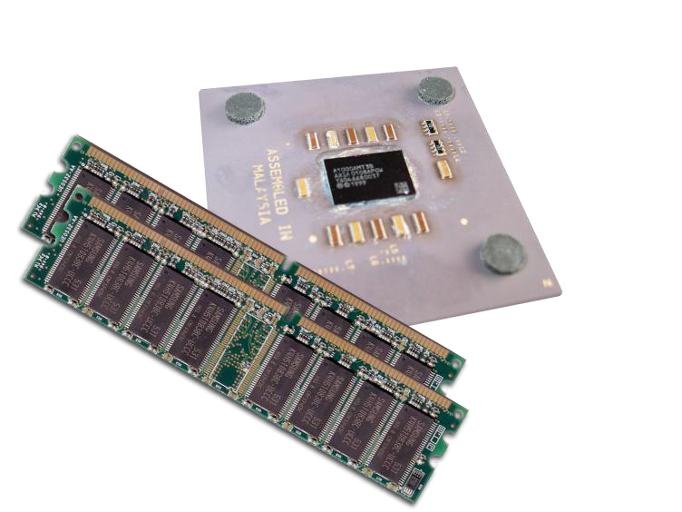
GPU
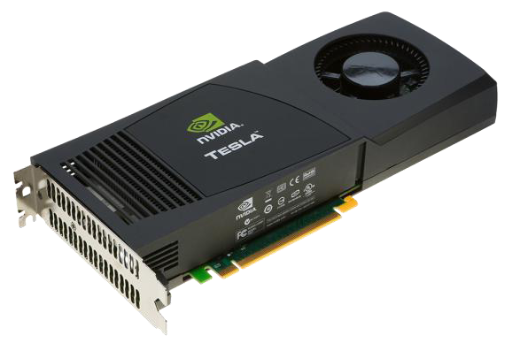
Threads on a CPU are generally heavyweight entities. The operating system must swap threads on and off CPU execution channels to provide multithreading capability. Context switches, when two threads are swapped, are therefore slow
and expensive. By comparison, threads on GPUs are extremely lightweight. In a typical system, thousands of threads are queued up for work in warps of 32 threads each. If the GPU must wait on one warp of threads, it simply begins executing work on another.
Because separate registers are allocated to all active threads, no swapping of registers or other state need occur when switching among GPU threads. Resources stay allocated to each thread until it completes its execution. In short, CPU cores are designed
to minimize latency for one or two threads at a time each, whereas GPUs are designed to handle a large number of concurrent, lightweight threads in order to maximize throughput.
High-level architecture
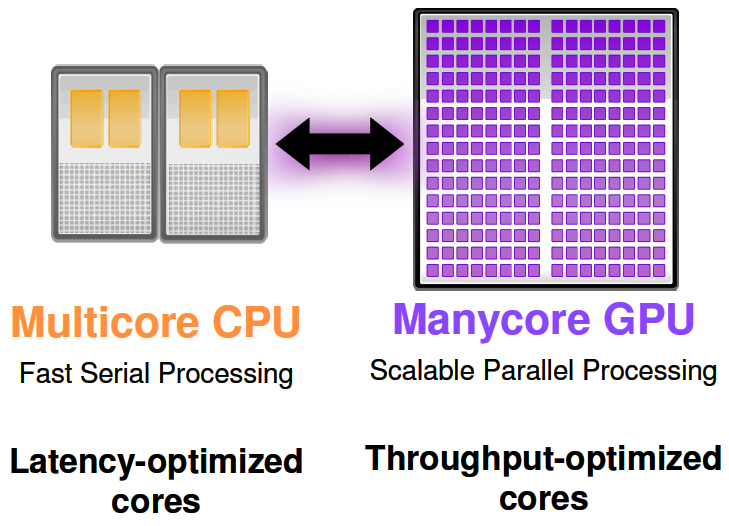
The host system (CPU) and the device (GPU) each have their own distinct attached physical memories. As the host and device memories are separated by the PCI Express (PCIe) bus, items in the host memory must occasionally be communicated
across the bus to the device memory or vice versa. Note that high throughput and short latency are fundamentally in conflict.
1.4 Architectural Decisions
The number of devices that can be placed on a chip continues to increase quadratically with decreasing feature size. However, due to leakage constraints, power supply voltage scaling has largely stopped, causing
energy per operation to now scale only linearly with process feature size. The result is that all computers, from mobile devices to supercomputers, have or will become constrained by power and energy rather than area. Because we can place more processors
on a chip than we can afford to power and cool, a chip’s utility is largely determined by its performance at a particular power level, typically 3W for a mobile device and 150W for a desktop or server component. Modern CPU processors evolved in an environment
where power was plentiful and absolute performance or performance per unit area was the important figure of merit. The resulting architectures were optimized for single-thread performance with features such as branch prediction, out-of-order execution, and
large primary instruction and data caches. In such architectures, most of the energy is consumed in overheads of data supply, instruction supply, and control. Today, the energy of a reasonable standard-cell-based double-precision fused-multiply-add (DFMA)
is less than 3 percent of the computational operation’s energy per instruction. Future architectures must be leaner, delivering a larger fraction of their energy to useful work. Although researchers have proposed several promising techniques such as
instruction registers, register caching, in-order cores, and shallower pipelines, many more are needed to achieve efficiency goals. Scaling trends suggest that
data movement will dominate future systems’ power dissipation. The cost of accessing data from on-chip static RAM (SRAM) – ignoring interconnect and pipeline registers – is approximately six times less than the cost of accessing the
same data from a more distant memory 10mm away, and 200 times less than the cost of accessing data from external DRAM. The ratios between on-chip SRAM and off-chip DRAM remain relatively constants for the future architectures, while the relative energy cost
of 10mm global wires goes up to 23 times. Because communication dominates energy, both within the chip and across the external memory interface, energy-efficient architectures must decrease the amount of state moved per instruction and must exploit locality
to reduce the distance data must move.
1.5 Shift in thinking
Current programming practice predominantly focuses on sequential, homogenous machines with a flat view of memory. Contemporary machines already moved away from this simple model, and future machines will only continue that trend.
Increasing time and energy costs of distant memory accesses demand deeper memory hierarchies. Performance sensitive code must exercise some explicit control over the movement of data within this hierarchy. However, few programming systems provide means for
programs to express the programmer’s knowledge about the data access patterns’ structure or to explicitly control data placement within the memory hierarchy. Older architectures encourage a
flat view of memory with implicit data caching occurring at multiple levels of the machine. As is abundantly clear in today’s clusters, this approach is not sustainable for scalable machines. Scaling memory systems will require relaxing traditional
notions of memory consistency and coherence to facilitate greater memory-level parallelism. Although full cache coherence is a convenient abstraction that can aid in programming productivity, the cost of coherence and its protocol traffic even at the chip
level makes supporting it for all memory accesses unattractive. Programming systems must let programmers reason about memory accesses with different attributes and behaviors, including some that are kept coherent and others that are not. Memory bandwidth and
access latency have not kept pace with per-socket computational throughput, and they will continue to fall further behind. Processors can mitigate the effects of increased latency by relying on increasing amounts of parallelism, particularly fine grained thread
and data parallelism. However, most programming systems don’t provide a convenient means of managing tens, much less tens of thousands, of threads on a single die. Even more challenging is the billion-way parallelism that exascale-class machines will
require. Future machines will be increasingly heterogeneous. Individual processor chips will likely contain processing elements with different performance characteristics, memory hierarchy views, and levels of physical parallelism. Programmers must be able
to reason about what kinds of processing cores their tasks are running on, and the programming system must be able to determine what type of core is best for a given task. By 2017, it is expected that GPUs will no longer be an external accelerator to a CPU;
instead, CPUs and GPUs will be integrated on the same die with a unified memory architecture. Such a system eliminates some of accelerator architectures’ historical challenges, including requiring the programmer to manage multiple memory spaces, suffering
from bandwidth limitations from an interface such as PCI Express for transfers between CPUs and GPUs, and the system-level energy overheads for both chip crossings and replicated chip infrastructure.
2. Hardware Architecture
The NVIDIA GPU architecture is built around a scalable array of multithreaded Streaming Multiprocessors (SMs). A multiprocessor is designed to execute hundreds of threads concurrently. To manage such a large amount of threads, it
employs a unique architecture called SIMT (Single-Instruction, Multiple-Thread). The instructions are pipelined to leverage instruction-level parallelism within a single thread, as well as thread-level parallelism extensively through simultaneous hardware
multithreading. All instructions are issued in order and there is no branch prediction and no speculative execution. Current GPUs consist of a high number of fragment processors with high memory bandwidth. In many ways, the architecture of a current GPU is
similar to a manycore processor, which achieves higher parallel code performance for rasterization applications. This is in contrast with multi-core CPUs, which consist of best single-thread performing cores. GPUs are primarily optimized for 2D arrays. Below
is a high-level abstraction for CPU and GPU memory hierarchies. GPUs (on the right) write to a high-bandwidth, high-latency video memory using small, write-through caches. Caches on the GPU are shared by a large number of fragment processors (FPs). Differences
in the architecture between CPU and GPU indicate that code must be optimized differently for the GPU to achieve higher performance.
CPU versus GPU architecture
GPU is specialized for compute-intensive, highly parallel computation and therefore designed such that more transistors are devoted to data processing rather than data caching and flow control. More specifically, the GPU is especially
well-suited to address problems that can be expressed as data-parallel computations – the same program is executed on many data elements in parallel – with high arithmetic intensity – the ratio of arithmetic operations to memory operations.
Because the same program is executed for each data element, there is a lower requirement for sophisticated flow control, and because it is executed on many data elements and has high arithmetic intensity, the memory access latency can be hidden with calculations
instead of big data caches.
CPU versus GPU architecture

Data-parallel processing maps data elements to parallel processing threads. Many applications that process large data sets can use a data-parallel programming modes to speed up the computations. In 3D rendering, large sets of pixels
and vertices are mapped to parallel threads. Similarly, image and media processing applications such as post-processing of rendered images, video encoding and decoding, image scaling, stereo vision, and pattern recognition can map image blocks and pixels to
parallel processing threads. Many algorithms outside the field of image rendering and processing are accelerated by data-parallel processing, from general signal processing or physics simulation to computational finance or computational biology.
GPU devotes more transistors to data processing
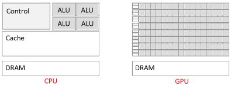
GPU design has different goals compared to those of a CPU:
- CPU must be good at everything, parallel or not
- GPU assumes work load is highly parallel where all threads on the GPU execute the same sequential program called a kernel
CPU: minimize latency experienced by 1 thread
- Big on-chip caches
- Sophisticated control logic
GPU: maximize throughput of all threads
- Number of threads in flight is limited by resources, hence lots of resources (registers, etc.)
- Multithreading can hide latency, hence skip the big caches
- Share control logic across many threads
CPUs are optimized for very fast performance of one execution thread. The other way to say it: CPU is built for low latency while GPU – for higher throughput sacrificing latency.
2.1 CPU Architecture
CPU cores are typically designed to run a single thread at full speed. For that, every instruction and its data need to be available when it is time for that instruction to run. If the next instruction is not ready or the data required
for that instruction is not available, the instruction cannot run and the processor stalls. External memory is distant from the processor, so it takes many cycles of wasted execution to fetch data from memory. Consequently, CPUs require large local caches
to keep running without stalling. Only ~1% of CPU is dedicated to computation, 99% to moving/storing data to combat latency.

CPU Architecture

CPU Architecture

Multi-core CPU
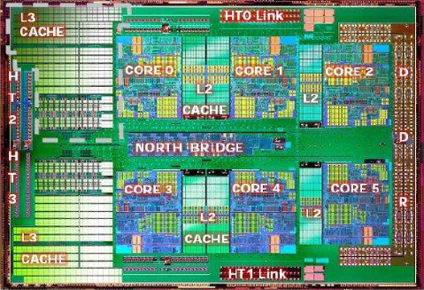
2008 Intel i7 Bloomfield processor includes four CPU cores with simultaneous multithreading, 8MB of L3 cache, and on-chip DRAM controllers. Made with 45nm process technology, each chip has 731 million transistors and consumes up
to 130W of thermal design power. Red outlines highlight the portion of each core occupied by execution units.
Intel’s Bloomfield
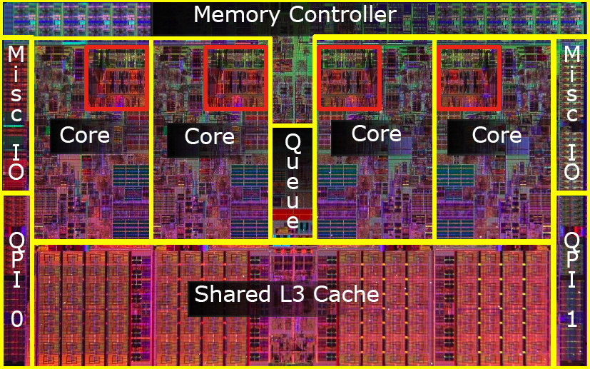
Intel’s Nehalem
Intel’s Nehalem CPU has a very sophisticated architecture and a laundry list of high-performance CPU design: four-wide superscalar, out of order, speculative execution, simultaneous multithreading, multiple branch predictors,
on-die power gating, on-die memory controllers, large caches, and multiple interprocessor interconnects. The Nehalem core includes multiple x86 instruction decoders, queues, reordering buffers, and six execution pipelines to support speculative out-of-order
multithreaded execution. Nehalem has been optimized for single-threaded performance and clock speed at the expense of sustained throughput. This is a desirable tradeoff for a chip intended to be a market-leading PC desktop and server processor, but it makes
Nehalem an expensive, power-hungry choice for high-performance computing.
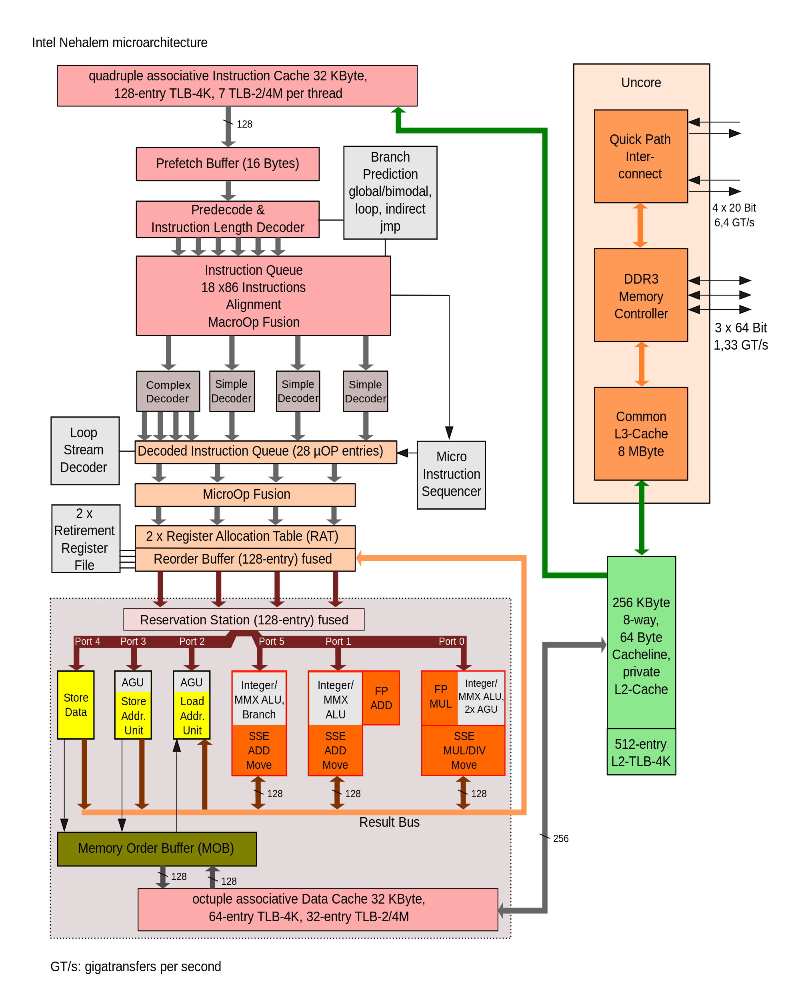
Intel Sandy Bridge Client
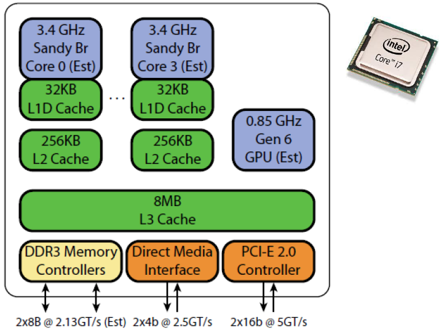
AMD Magny-Cours MCM (2 Nodes)
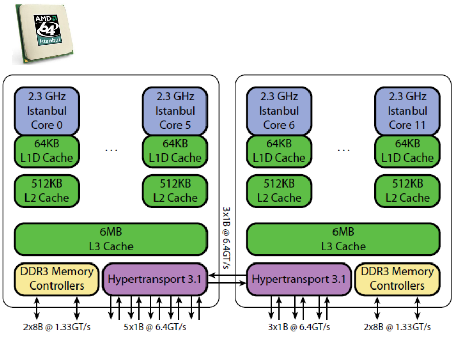
AMD Magny-Cours
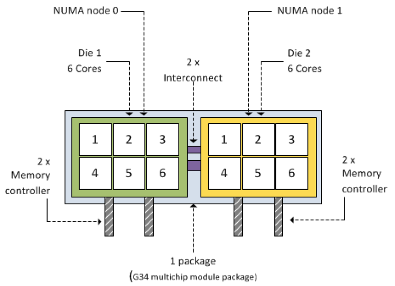
AMD Magny-Cours

Intel Single-Chip Cloud Computer (SCC), tile is a dual core
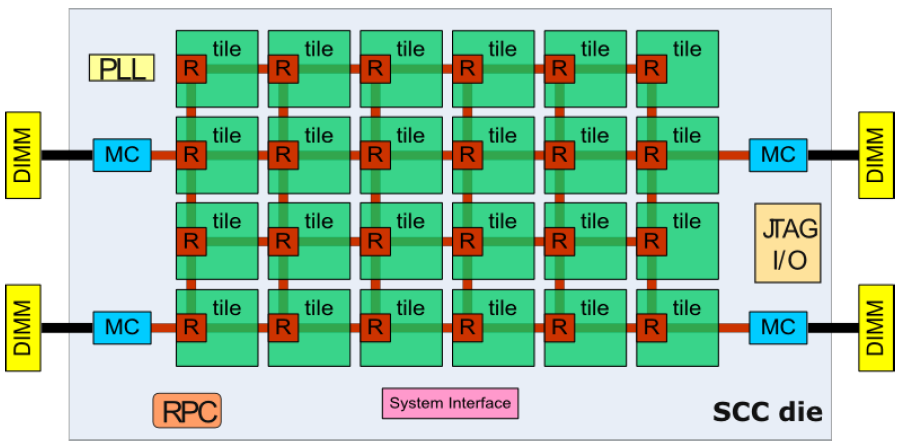
Intel SCC Tile
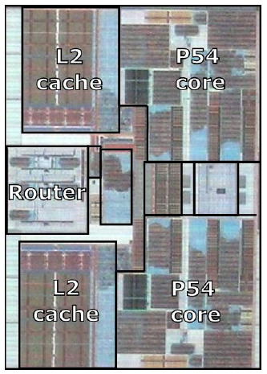
Inside the SCC
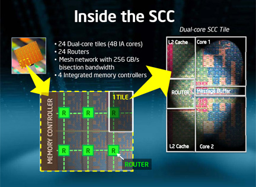
Intel’s 4th Generation Haswell, the road to SoC

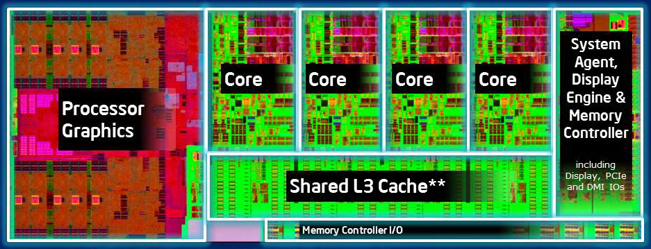
Driven by the explosion of low-power devices like phones and tablets and the need to provide more functionality per processing unit, CPU manufacturers are now building systems-on-a-chip (SoC). SoC integrates several previously independent
subsystems into a single chip:
- CPU;
- memory, input/output (I/O), storage;
- media (video and audio, for example);
- graphics;
- cameras;
- wireless;
- etc.
SoC is built in two phases: first modular subsystems are built, then these subsystems are integrated into the chip. At Qualcomm, for example, SoC assembly from different components is done several times a year resulting in six or
eight new SoCs each year. Below is a conceptual diagram of Intel’s Atom “Clover Trail” processor for Windows 8 tablets showing different subsystems integrated into a single chip.
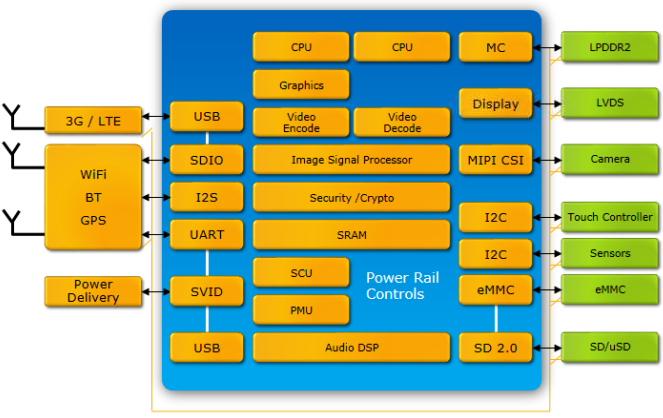
2.2. GPU Architecture
Flynn taxonomy is a classification of CPU architectures proposed in 1996 and is based upon a number of concurrent instruction and data streams.
Flynn Taxonomy
GPUs do not fit into the Flynn definition and require a different architectural design:
- SIMT (Single Instruction Multiple Threads) execution
- Hardware handles divergence automatically
- Hardware multithreading
- HW resource allocation & thread scheduling
- HW relies on threads to hide latency
- Context switching is (basically) free
In November 2006 NVIDIA introduced GeForce 8800 GPU based on G80 architecture. It had several innovations that gave birth to the new GPU Computing model.
- It supported C allowing programmers to write code that runs on the GPU
- It replaced separate vertex and pixel shader pipelines with a single, unified processor that could execute either shaders or computing programs
- It introduced a scalar thread processor, eliminating the need for programmers to manually manage vector registers
- It introduced single-instruction multiple-thread (SIMT) execution model where multiple independent threads execute concurrently using a single instruction
- It introduced shared memory and barrier synchronization for inter-thread communication.
In June 2008, NVIDIA introduced a major revision to the G80 architecture. The second generation unified architecture, GT200, increased the number of streaming processor cores (subsequently referred to as CUDA cores) from 128 to
240. Each processor register file was doubled in size, allowing a greater number of threads to execute on-chip at any given time. Hardware memory access coalescing was added to improve memory access efficiency. Double precision floating point support was also
added to address the needs of scientific and high-performance computing (HPC) applications.
GPU conceptual view
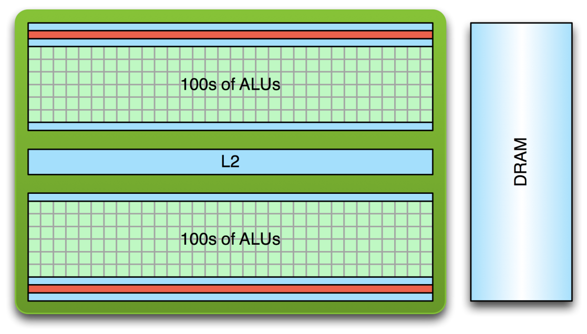
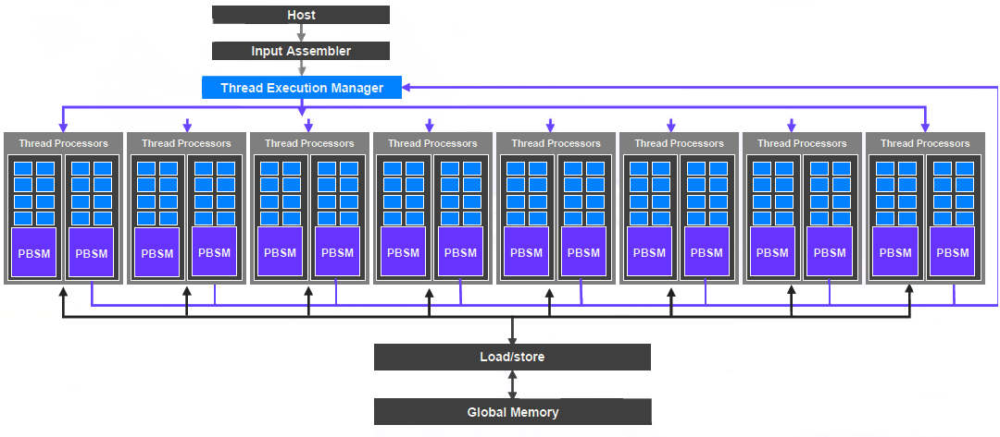
The GPU consists of an array of SM (streaming multiprocessor) multiprocessors, each of which is capable of supporting thousands co-resident concurrent threads. Each SM in the GPU is a set of processors. At each clock cycle, a multiprocessor
executes the same instruction on a group of threads called a warp.
Streaming Multiprocessors (SM)
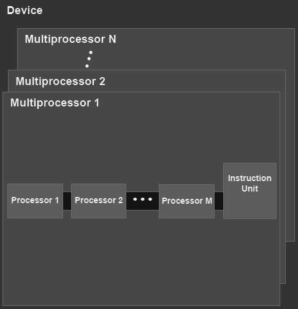
Device Memory architecture
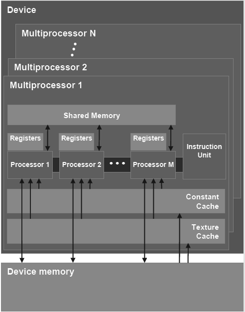
2.2.1 Processing Flow
GPU does not have access to main memory (although in the future that may change) and hence data has to be copied from CPU to GPU memory which is always done by the CPU. Moving data is usually the highest cost of GPGPU computation
solutions.
GPU Data flow

CPU is also responsible for loading a GPU kernel code. For better performance moving data from main memory to the GPU should be avoided.
GPU Program execution flow

After GPU finishes computation, the data will be copied back to the CPU memory, also initiated by the CPU.
CPU copies data back after the computation
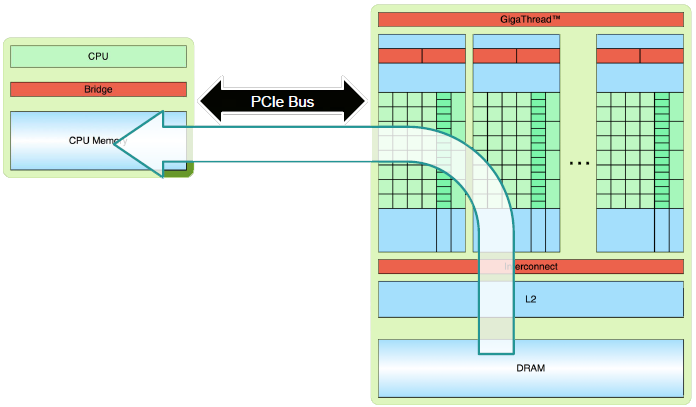
2.2.2 GPU Components
GPU consists of two main components:
- Global memory
- Streaming Multiprocessors (SM) where each SM has:
- Control units
- Registers
- Execution pipelines
- Caches
GPU memory is accessible by both GPU and CPU. Following are some examples of various GPUs.
AMD ATI Radeon HD 5870

NVIDIA Fermi
GeForce GTX 770
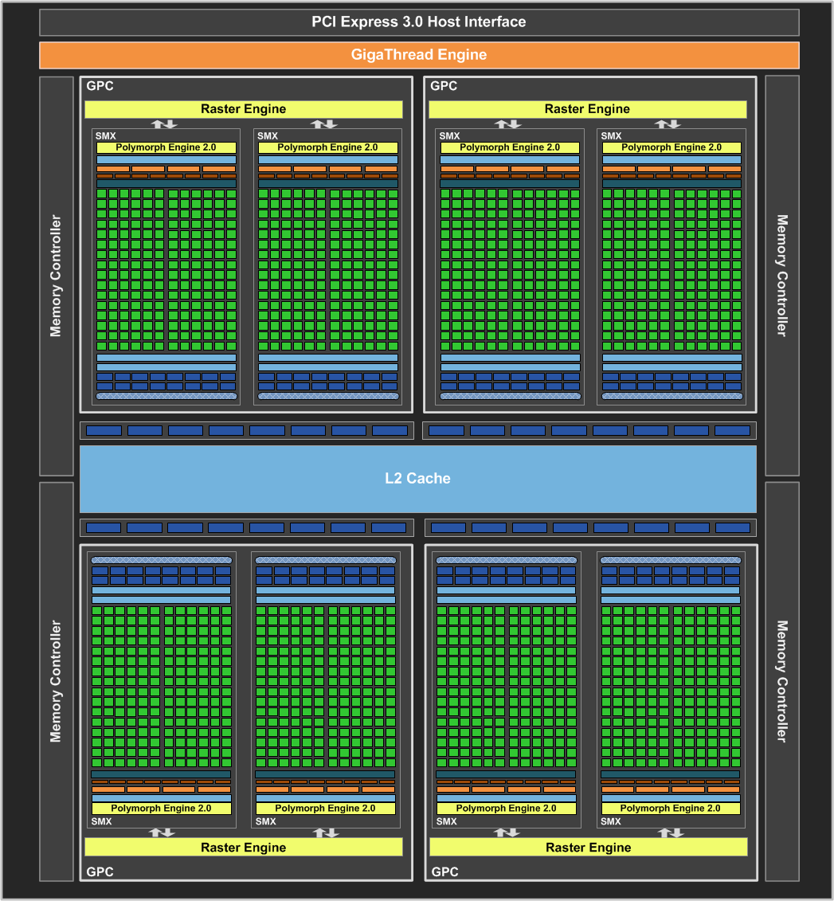
GeForce GTX 780 core
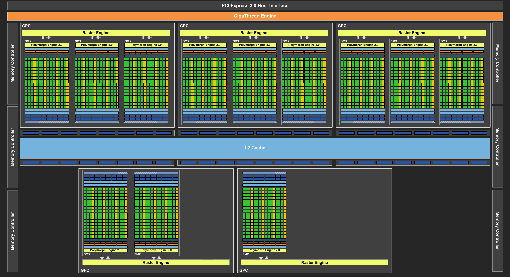
GeForce 8800 GTX
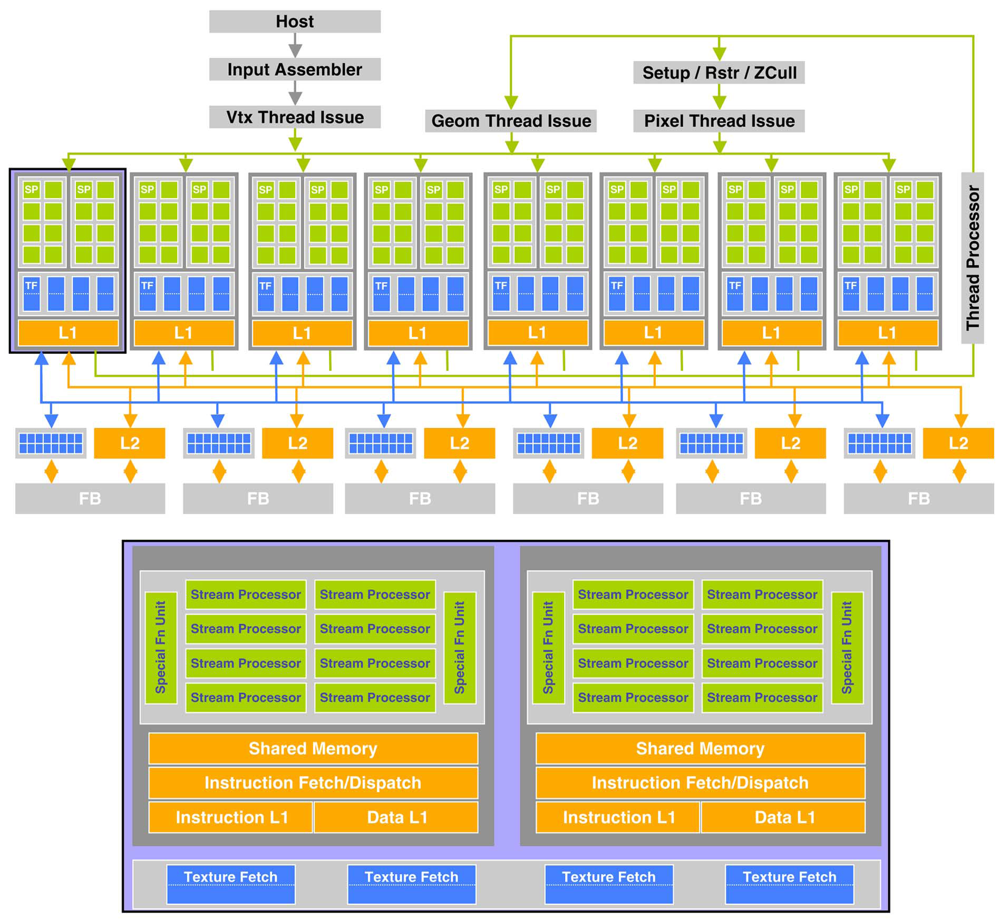
GeForce 8800 Architecture
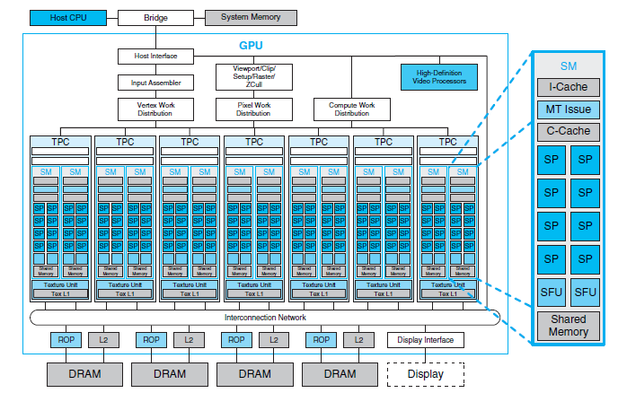
GeForce 8800 represents a basic unified GPU code-named Tesla architecture with 112 streaming processor (SP) highly multithreaded cores, each managing 96 concurrent threads and their state in hardware, organized in 14 streaming multiprocessors
(SMs). The processors connect with four 64-bit-wide DRAM partitions via an interconnect network. Each SM has eight SP cores, two special function units (SFUs), instruction and constant caches, a multithreaded instruction unit, and a shared memory. Unified
means that traditional graphics programs for vertex, geometry, and pixel shading run on the unified SMs and their SP cores, and computing programs run on the same processors. The processor array architecture is scalable to smaller and larger GPU configurations
by scaling the number of multiprocessors and the number of memory partitions. Figure above shows seven clusters of two SMs sharing a texture unit and a texture L1 cache. The texture unit delivers filtered results to the SM given a set of coordinates into a
texture map. Because filter regions of support often overlap for successive texture requests, a small streaming L1 texture cache is effective to reduce the number of requests to the memory system. The processor array connects with raster operation (ROP) processors,
L2 texture caches, external DRAM memories, and system memory via a GPU-wide interconnection network. The number of processors and number of memories can scale to design balanced GPU systems for different performance and market segments. TPC’s are
texture/processor clusters and each TPC contains a geometry controller, an SM controller (SMC), two streaming multiprocessors (SMs), and a texture unit. The geometry controller maps the logical graphics vertex pipeline into recirculation on the physical
SMs by directing all primitive and vertex attribute and topology flow in the TPC. The SMC controls multiple SMs, arbitrating the shared texture unit, load/store path, and I/O path. The SMC serves three graphics workloads simultaneously: vertex, geometry, and
pixel. The texture unit processes a texture instruction for one vertex, geometry, or pixel quad, or four compute threads per cycle. Texture instruction sources are texture coordinates, and the outputs are weighted samples, typically a four- component (RGBA)
floating-point color. The texture unit is deeply pipelined. Although it contains a streaming cache to capture filtering locality, it streams hits mixed with misses without stalling.
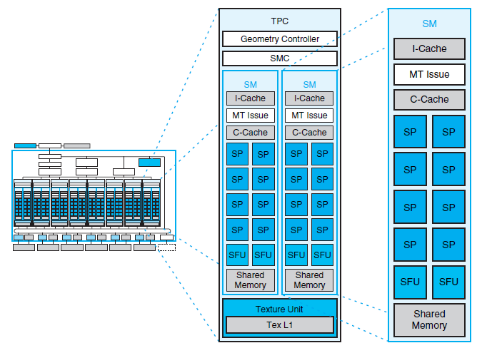
2.2.3 Tesla Architecture, circa 2008
Tesla architecture is built around a scalable array of multithreaded SMs (Streaming Multiprocessors). In 2008, GPU implementations ranged from 768 to 12,288 concurrently executing threads. Transparent scaling across this wide range
of available parallelism is a key design goal of both the GPU architecture and the CUDA programming model. A figure below shows a GPU with 14 SMs – a total of 112 SP (Streaming Processor) cores, or 8 SPs per SM – interconnected with four external
DRAM partitions. When a CUDA program on the host CPU invokes a kernel grid, the CWD (Compute Work Distribution) unit enumerates the blocks of the grid and begins distributing them to SMs with available execution capacity. The threads of a thread block execute
concurrently on one SM. As thread blocks terminate, the CWD unit launches new blocks on the vacated multiprocessors.
Tesla Architecture
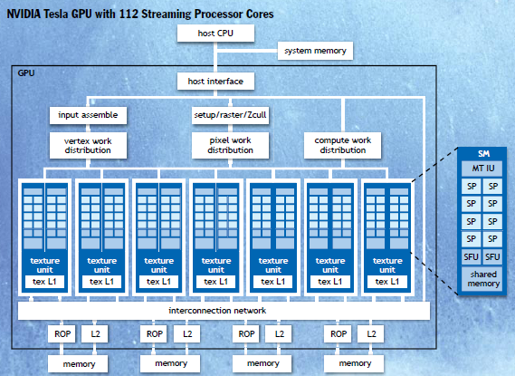
An SM consists of eight scalar cores, two SFUs (special function units) for transcendentals such as exponential function, logarithm, and trigonometric functions, an MT UI (multithreaded instruction unit), and
on-chip shared memory. The SM creates, manages, and executes up to 768 concurrent threads in hardware with zero scheduling overhead. It can create as many as eight CUDA thread blocks concurrently, limited by thread and memory resources. The SM implements
the CUDA __synchthreads() barrier synchronization intrinsic with a single instruction. Fast barrier synchronization together with lightweight thread creation and zero-overhead thread scheduling efficiently support
very fine-grained parallelism, allowing a new thread to be created to compute each vertex, pixel, and data point. To manage hundreds of threads running several different programs, the Tesla SM employs SIMT architecture (single-instruction, multiple-thread).
The SM maps each thread to one SP scalar core, end each scalar thread executes independently with its own instruction address and register state. The SM SIMT unit creates, manages, schedules, and executes threads in groups of 32 parallel threads called warps
(the term originated from weaving, the first parallel thread technology). Individual threads composing a SIMT warp start together at the same program address but are otherwise free to branch and execute independently. Each SM manages a pool of 24 warps of
32 threads per warp, a total of 768 threads. Every instruction issue time, the SIMT unit selects a warp that is ready to execute and issues the next instruction to the active threads of the warp. A warp executes one common instruction at a time, so full efficiency
is realized when all 32 threads of a warp agree on their execution path. If threads of a warp diverge via a data-dependent conditional branch, the warp serially executes each branch path taken, disabling threads that are not on that path, and when all paths
complete, the threads converge back to the same execution path. Branch divergence occurs only within a warp; different warps execute independently regardless of whether they are executing common or disjointed code paths. As a result, the Tesla-architecture
GPUs are dramatically more efficient and flexible on branching code than previous-generation GPUs, as their 32-thread warps are much narrower than the SIMD (single-instruction multiple-data) width of prior GPUs. SIMT architecture is akin to SIMD vector organizations
in that a single instruction controls multiple processing elements. A key difference is that SIMD vector organizations expose the SIMD width to the software, whereas SIMT instructions specify the execution and branching behavior of a single thread. In contrast
with SIMD vector machines, SIMT enables programmers to write thread-level parallel code for independent, scalar threads, as well as data-parallel code for coordinated threads. For the purposes of correctness, the programmer can essentially ignore the SIMT
behavior; however, substantial performance improvements can be realized by taking care that the code seldom requires threads in a warp to diverge. In practice, this is analogous to the role of cache lines in traditional code: cache line size can be safely
ignored when designing for correctness but must be considered in the code structure when designing for peak performance. Vector architectures, on the other hand, require the software to coalesce loads into vectors and manage divergence manually. A thread’s
variables typically reside in live registers. The 16KB SM shared memory has very low access latency and high bandwidth similar to an L1 cache; it holds CUDA per-block
__shared__ variables for the active thread blocks. The SM provides load/store instructions to access CUDA
__device__ variables in GPU external DRAM. It coalesces individual accesses of parallel threads in the same warp into fewer memory-block accesses when the addresses fall in the same block and meet alignment criteria.
Because global memory latency can be hundreds of processor clocks, CUDA programs copy data to shared memory when it must be accessed multiple times by a thread block. Tesla load/store memory instructions use integer byte addressing to facilitate conventional
compiler code optimizations. The large thread count in each SM, together with support for many outstanding load requests, helps to cover load-to-use latency to the external DRAM. Tesla-architecture GPUs also provide atomic read-modify-write memory instructions,
facilitating parallel reductions and parallel-data structure management. CUDA applications perform well on Tesla-architecture GPUs because CUDA’s parallelism, synchronization, shared memories, and hierarchy of thread groups map efficiently to features
of the GPU architecture, and because CUDA expresses application parallelism well.
Tesla Architecture (2008)
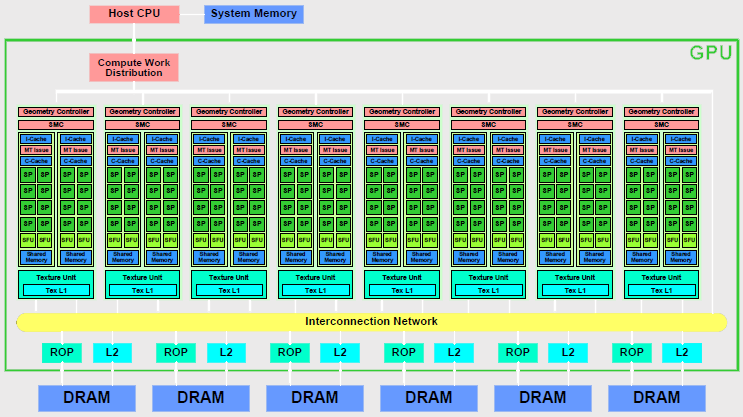
2.2.3.1 Execution Model
Parallel execution and thread management are automatic. All thread creation, scheduling, and termination are handled for the programmer by the underlying system. Indeed, a Tesla-architecture GPU performs all thread management directly
in hardware. The threads of a block execute concurrently and may synchronize at a barrier by calling the
__synchthreads() intrinsic. This guarantees that no thread participating in the barrier can proceed until all participating threads have reached the barrier. After passing the barrier, these threads are also guaranteed
to see all writes to memory performed by participating threads before the barrier. Thus, threads in a block may communicate with each other by writing and reading per-block shared memory at a synchronization barrier. Since threads in a block may share local
memory and synchronize via barriers, they reside on the same physical processor or multiprocessor. The number of thread blocks can, however, greatly exceed the number of processors. This virtualizes the processing elements and gives the programmer the flexibility
to parallelize at whatever granularity is most convenient. This allows intuitive problem decompositions, as the number of blocks can be dictated by the size of the data being processed rather than by the number of processors in the system. This also allows
the same CUDA program to scale to widely varying numbers of processor cores. To manage this processing element virtualization and provide scalability, CUDA requires that thread blocks execute independently. It must be possible to execute blocks in any order,
in parallel or in series. Different blocks have no means of direct communication, although they may coordinate their activities using atomic memory operations on the global memory visible to all threads – by atomically incrementing queue pointers, for
example. This independence requirement allows thread blocks to be scheduled in any order across any number of cores, making the CUDA model scalable across an arbitrary number of cores, as well as across a variety of parallel architectures. It also helps to
avoid the possibility of deadlock. An application may execute multiple grids either independently or dependently. Independent grids may execute concurrently given sufficient hardware resources. Dependent grids execute sequentially, with an implicit inter-kernel
barrier between them, thus guaranteeing that all blocks of the first grid will complete before any block of the second dependent grid is launched. Threads may access data from multiple memory spaces during their execution. Each thread has a private local memory.
CUDA uses this memory for thread-private variables that do not fit in the thread’s registers, as well as for stack frames and register spilling. Each thread block has a shared memory visible to all threads of the block that has the same lifetime as the
block. Finally, all thread have access to the same global memory. Programs declare variables in shared and global memory with the
__shared__ and
__device__ type qualifiers. On a Tesla-architecture GPU, these memory spaces correspond to physically separate memories: per-block shared memory is a low-latency on-chip RAM, while global memory resides in the fast DRAM on the graphics board. Shared
memory is expected to be a low latency memory near each processor, much like an L1 cache. It can, therefore, provide for high-performance communication and data sharing among the threads of a thread block. Since it has the same lifetime as its corresponding
thread block, kernel code will typically initialize data in shared variables, compute using shared variables, and copy shared memory results to global memory. Thread blocks of sequentially dependent grids communicate via global memory, using it to read input
and write results. Diagram below shows nested levels of threads, thread blocks, and grids of thread blocks. It also shows corresponding levels of memory sharing: local, shared, and global memories for per-thread, per-thread-block, and per-application data
sharing.
Levels of Parallel Granularity and Memory Sharing
To enable CUDA programs to run on any number of processors, communication between thread blocks within the same kernel grid is not allowed – they must execute independently. Since CUDA requires that thread blocks to be executed
in any order, combining results generated by multiple blocks must in general be done by launching a second kernel on a new grid of thread blocks. However, multiple thread blocks can coordinate their work using atomic operations on global memory. One of the
important architectural features exposed by CUDA is the presence of the per-block shared memory, a small on-chip memory with very low latency. Taking advantage of this memory can deliver substantial performance improvements. One common way of doing this is
to use shared memory as a software-managed cache to hold frequently reused data.
2.2.3.2 SM Architecture
GPU Components
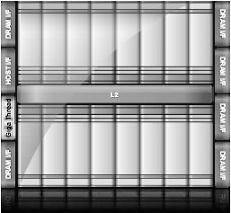
SM Architecture showing multithreaded Instruction Unit (MT IU)
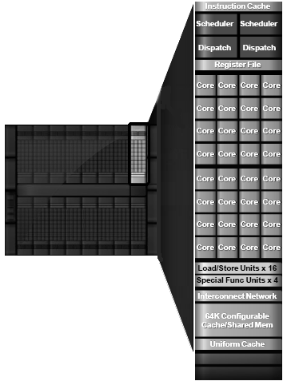
Cores are synonymous to Stream Processor (SP). Streaming Multiprocessors (SM) execute blocks of threads and consist of:
- Stream (thread) Processors (SP) that run in SIMD mode and execute individual threads
- Special Function Units (SFU) for transcendentals such as trigonometric functions
- Scalar ISA (Instruction Set Architecture)
- Multithreaded Instruction Unit
- Shared Memory which is part of device memory hierarchy
SM Multithreaded Multiprocessor
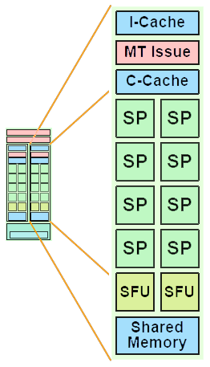
CUDA Core
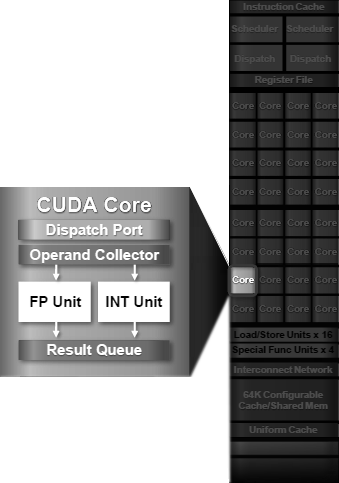
2.2.4 Fermi Architecture
Fermi was the first computational GPU. To build it, NVIDIA took all they learned from the two prior processors and all the applications that were written for them. Fermi’s 16 SM are positioned around a common L2 cache. Each
SM is a vertical rectangular strip that contains scheduler and dispatch, execution units, and register file and L1 cache. Fermi supports concurrent kernel execution, where different kernels of the same application context can execute on the GPU at the same
time thus fully utilizing GPU capacity.
Fermi Architecture
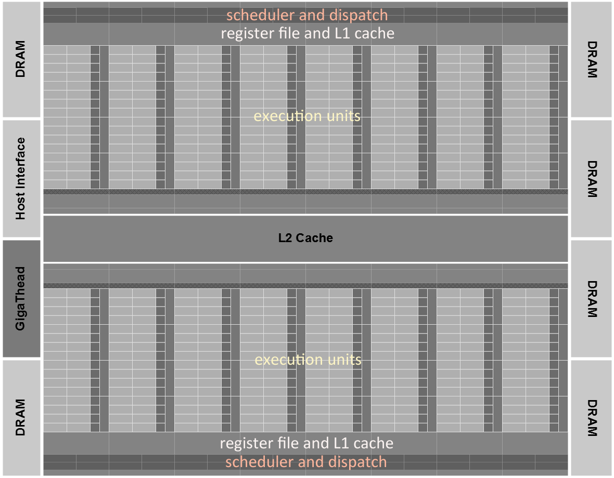
Fermi Architecture

Fermi Streaming Multiprocessor (SM)
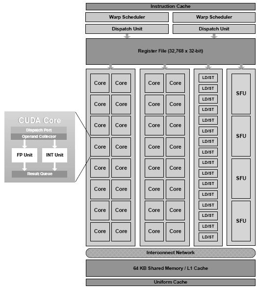
2.2.5 Kepler Architecture
Kepler is built on the new 28nm process and replaces 40nm Fermi GPU architecture keeping the basic layout of Fermi but with some significant alterations to the streaming multiprocessor design.
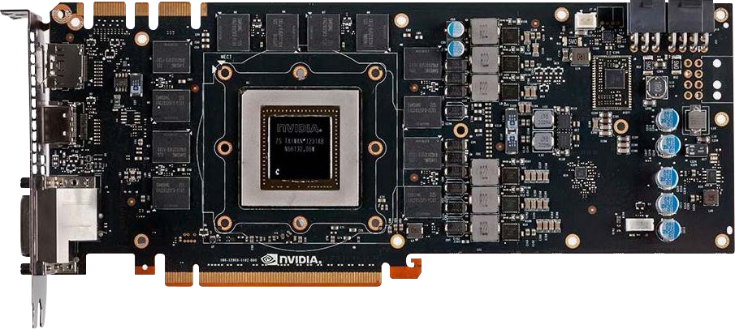
Kepler GK110 adds many innovative features focused on compute performance and was designed to be a parallel processing powerhouse for Tesla and the HPC market.
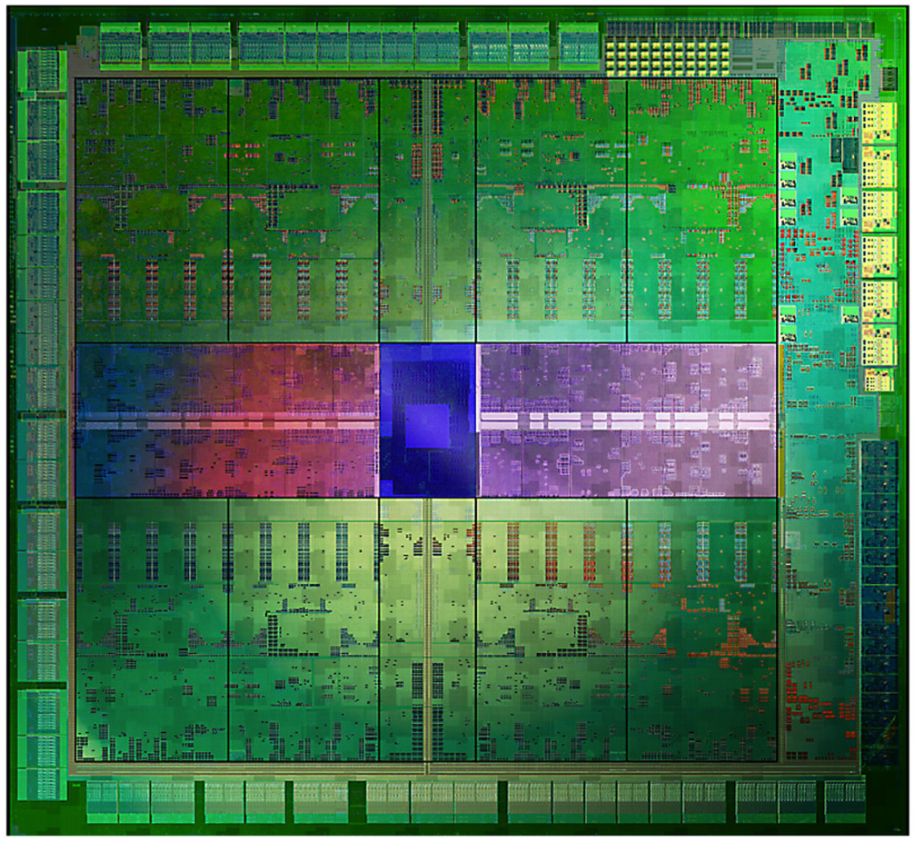
Kepler GK110
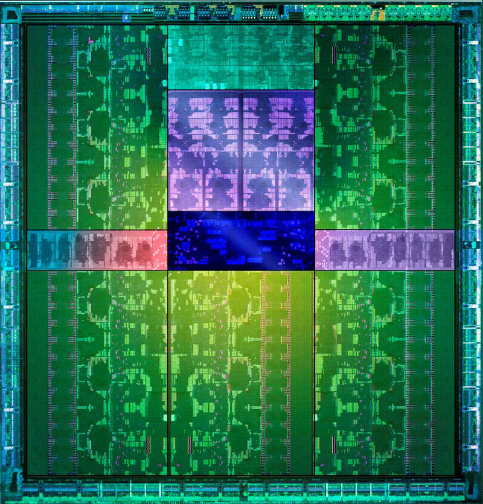
2.2.5.1 Kepler Overview
Key new features of Kepler compared to previous Fermi are:
- The new SMX processor architecture
- An enhanced memory subsystem, offering additional caching capabilities, more bandwidth at each level of the hierarchy, and a fully redesigned and substantially faster DRAM I/O implementation
- Hardware support throughout the design to enable new programming model capabilities.
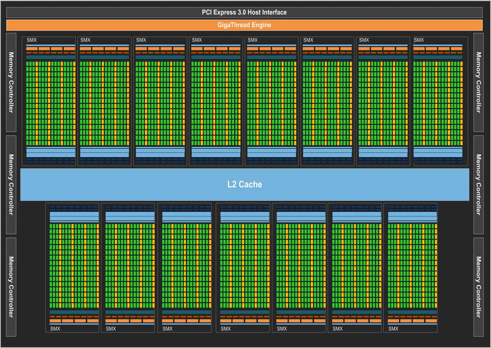
SMX
Kepler replaces SM with SMX consisting of 192 CUDA cores, 32 Special Function Units (SFU), and 32 Load/Store units (LD/ST). It was designed from ground up to maximize computational performance with superior power efficiency. SMX
is 3 times more energy efficient than previous Fermi multiprocessor. One of the design goals for the Kepler was to significantly increase the GPU’s delivered double precision performance, since double precision arithmetic is at the heart of many HPC
applications. Kepler SMX also retains the special function units (SFUs) for fast approximate transcendental operations providing 8x the number of SFUs of the Fermi.
Kepler and Fermi architecture comparison
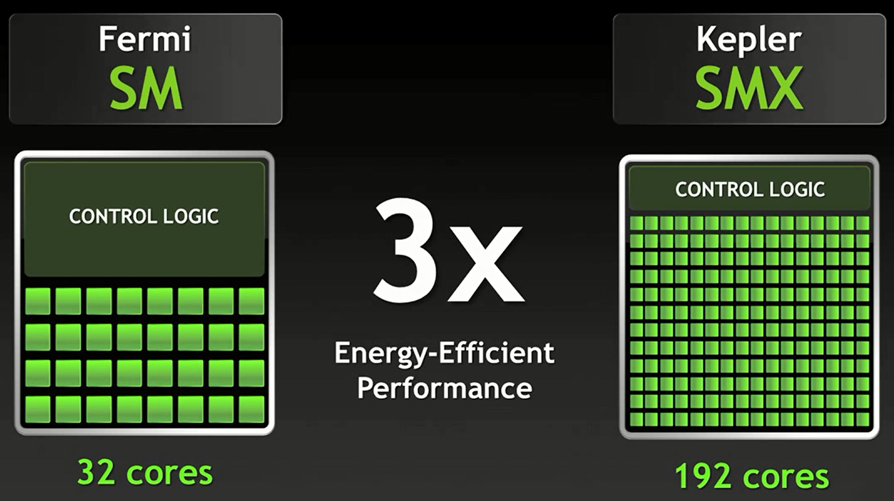
SMX and SM comparison
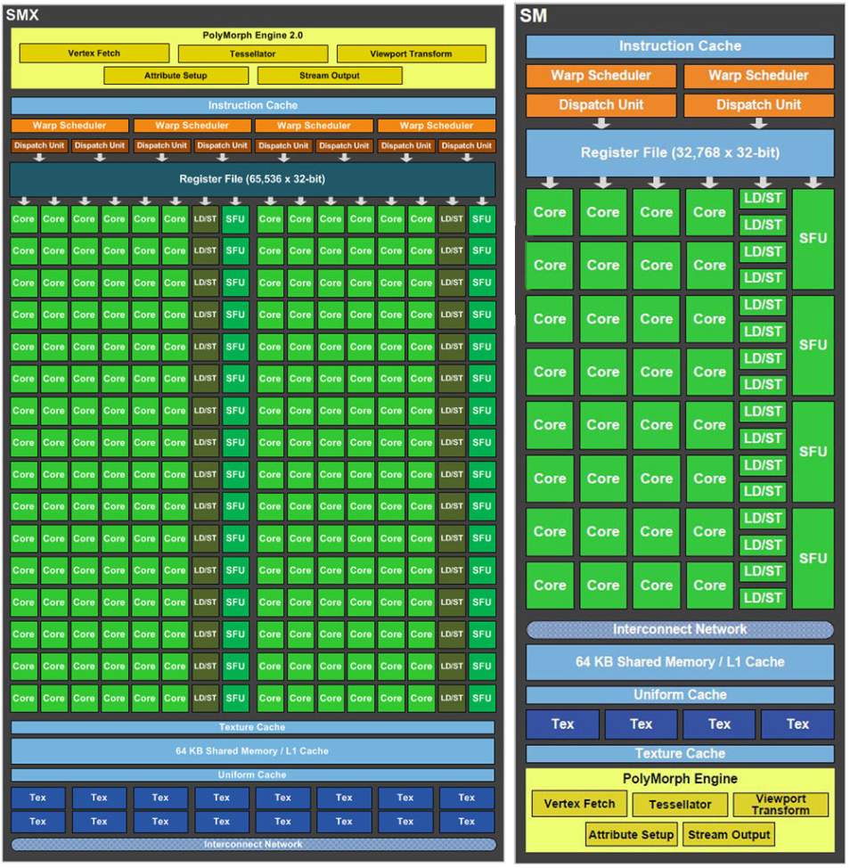
Kepler GK110 SMX
Quad warp scheduler
The SMX schedules threads in groups of 32 parallel threads called warps. Each SMX features four warp schedulers and eight instruction dispatch units, allowing four warps to be issued and executed concurrently. Kepler’s quad
warp scheduler selects four warps, and two independent instructions per warp can be dispatched each cycle. Unlike Fermi, which did not permit double precision instructions to be paired with other instructions, Kepler allows double precision instruction to
be paired with other instructions.

Hyper-Q
CPU’s struggle to keep GPUs busy. Following heat-map shows the bright-spots where the device SMs are busy, while the dark spots demonstrate where the GPU is idle. The problem with Fermi is that the GPU has only 1 queue to
orchestrate workload, which could cause bottlenecks where work is stacked up in the single GPU queue and the CPU is not able to keep the GPU busy because the jobs are blocked in that single work queue even though the GPU has computational resources.
Fermi heat-map
Although the answer is straight forward, the implementation is very challenging. With Kepler, there are now 32 concurrent work queues. They are called a Hyper-Q. As a result, this massively-paralleled processor is much busier.
Comparison between Fermi on the left and Kepler Hyper-Q heat-maps on the right
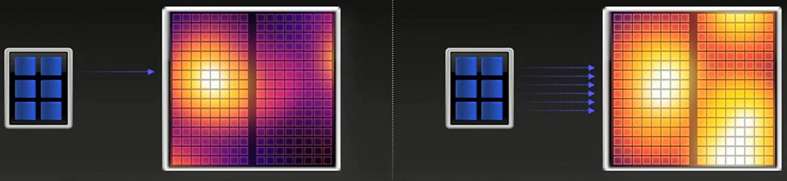
Dynamic Parallelism
Dynamic parallelism is all about scheduling work on the GPU based on the data without the need for the CPU to coordinate work. The accelerator can now generate work for itself, it can launch its own kernels unlike in the past where
CPU was solely responsible for launching all kernels allowing more of a program to directly run on the GPU without communication with the CPU.
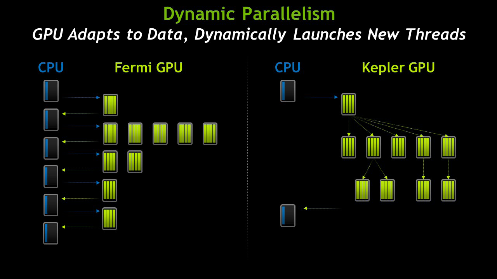
The GPU is split into four separate graphics processor clusters (GPCs) comprised of two SMs each now named SMX. Each SM has 192 stream processors opposed to 32 in Fermi. Huge SP count required increase in the number of warp schedulers
to four per SM, although the total number on the GPU remains 32, each dispatching two instructions per clock thanks to a pair of instruction dispatch units. Each SM has one PolyMorph Engine acting as an intermediary throughout the rendering process: applies
vertex fetch, tessellation, viewport transform, attribute setup, and stream output whilst passing the results to SMs in between each process. Both Fermi and Kepler apply tessellation at an SM level.
Example of dynamic parallelism
C++Edit|Removecplusplus__global__ ChildKernel(void* data){ //Operate on data } __global__ ParentKernel(void *data){ if (threadIdx.x == 0) { ChildKernel<<<1, 32>>>(data); cudaThreadSynchronize(); } __syncthreads(); //Operate on data } // In Host Code ParentKernel<<<8, 32>>>(data);__global__ ChildKernel(void* data){ //Operate on data } __global__ ParentKernel(void *data){ if (threadIdx.x == 0) { ChildKernel<<<1, 32>>>(data); cudaThreadSynchronize(); } __syncthreads(); //Operate on data } // In Host Code ParentKernel<<<8, 32>>>(data);
Quadro
At the time of writing, NVidia’s most powerful and fastest GPU is Quadro K6000 featuring 12GB of memory, still built on Kepler architecture.
2.3 New Research
NVidia Research team Echelon project aims to address energy-efficiency and memory-bandwidth challenges and provide features that facilitate programming of scalable parallel systems. Echelon is a general-purpose fine-grained parallel-computing
system that performs well on a range of applications, including traditional and emerging computational graphics as well as data-intensive and high-performance computing. At a 10 nm process technology in 2017, the Echelon project’s initial performance
target is a peak double-precision throughput of 16 Tflops, a memory bandwidth of 1.6 terabytes/second, and a power budget of less than 150 W. The goal is to integrate CPUs and GPUs on the same die with a unified memory architecture. Such a system eliminates
some of accelerator architectures’ historical challenges, including requiring the programmer to manage multiple memory spaces, suffering from bandwidth limitations from an interface such as PCI Express for transfers between CPUs and GPUs, and the system-level
energy overheads for both chip crossings and replicated chip infrastructure. Echelon aims to achieve an average energy efficiency of 20 pJ per sustained floating-point instruction, including all memory accesses associated with program execution.
Echelon System Sketch
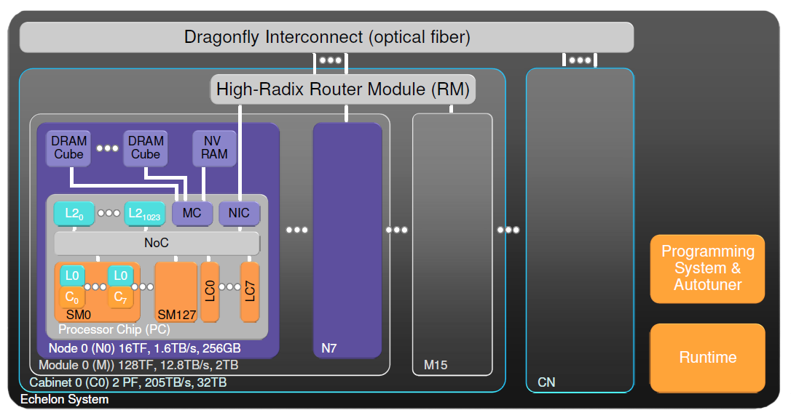
Echelon Processor Sketch
Echelon processor will have:
- Global address space
- Flexible memory hierarchy
- Efficient bulk parallelism
- Thread array creation & management
- Thread synchronization
- Heterogeneous cores
- Latency-optimized (LC)
- Throughput-optimized (SM)
Implications of this work are that programming languages and hardware will/must evolve:
| Hardware Trajectory | Programming Languages |
|---|---|
| Abundant parallelism | Minimal parallelism (if any) |
| Heterogeneous cores | Homogeneous core (s) |
| Memory is complicated | Memory is simple & flat |
2.4 Future Roadmap
Current Kepler chip in the middle, surrounded by memory units

Volta with stacked DRAM where semi-transparent chip is overlaid over Kepler.
New memory architecture will allow to achieve terabytes of bandwidth per second. To put it in perspective, this design will allow to move contents of entire Blue Ray disk in 1/50th of a second.
3. CUDA Memory Model
Memory hierarchy
- Local storage
- Each thread has own local storage
- Mostly registers (managed by the compiler)
- Shared memory
- Each thread block has its own shared memory
- Very low latency (a few cycles)
- Very high throughput
- Global memory
- Accessible by all threads as well as host (CPU)
- High latency
- Much lower throughput than shared memory
Threads may access data from multiple memory spaces during their execution. Each thread has a private memory. Each thread block (CTA) has a shared memory visible to all threads of the block and with the same lifetime as the block.
Finally, all threads have access to the same global memory. There are additional memory spaces accessible by all threads: the constant, texture, and surface memory spaces. Constant and texture memory are read-only; surface memory is readable and writable.
.png)
A set of SIMT multiprocessors with on-chip shared memory
Processors on the device cannot see host (CPU) memory while host can access device global memory and control startup of threads on the device.
Salient features of device memory

3.1 On-chip physical memory
- Set of registers per SP and allocated in frames to threads
- Shared memory (data cache) accessible by all SPs within the same SM
- Read-only constant cache shared by all SPs
- Read-only texture cache shared by all SPs and accessed by special addressing modes: texture unit
3.2 Off-chip ‘device memory’
- Multiple interfaces to off chip DRAM chips
- Runs on separate clock from rest of chip
- Designed for extremely high bandwidths
- Interfaces share an L2 cache
- Has high latency for a memory reference from an SM/SP
3.3 Registers
Each thread has access to registers. Generally, accessing a register consumes zero extra clock cycles per instruction, but delays may occur due to register read-after-write dependencies and register memory bank conflicts. The compiler
and hardware thread scheduler will schedule instructions as optimally as possible to avoid register memory bank conflicts. They achieve the best results when the number of threads per block is a multiple of 64. Register pressure occurs when there are not enough
registers available for a given task. Even though each multiprocessor contains thousands of 32-bit registers, these are partitioned among concurrent threads.
3.4 Shared memory
Shared memory is divided into equally sized memory modules (banks) that can be accessed simultaneously. Because it is on-chip, shared memory has much higher bandwidth and lower latency than global
or local memory, provided there are no bank conflicts between the threads. Shared memory is allocated per block and has the same lifetime as the block and, obviously, threads within a block can see variables stored
in the shared memory. Access to shared memory is slower than to the local memory.
3.5 Local memory
Each thread has a local copy of the data declared in the kernel which is not visible to other threads. Local memory is so named because its scope is local to the thread, not because of its physical location. Local memory is off-chip
making access to it as expensive as access to global memory. The name ‘local’ does not imply faster access. Local memory is used to hold automatic variables and only when there is insufficient register space to hold the variable, this is done by
the nvcc compiler. Often these are large structures or arrays that would consume too much register space and arrays that the compiler determines may be indexed dynamically.
3.6 Global memory
All blocks can share data via GPU global memory, access to which is significantly slower than shared or local memory. Data lifetime of global memory is from allocation by the CPU using
cudaMemset or
cudaMalloc until cudaFree is called.
3.7 Texture memory
In some cases the host could also allocate texture and constant memory. Texture memory is read-only and cached resulting in one read from the cache, unless there is a cache miss in which case a texture fetch costs one device memory
read. The texture cache is optimized for 2D spatial locality, so threads of the same warp that read texture addresses that are close together will achieve best performance. Texture memory is also designed for streaming fetches with a constant latency; that
is, a cache hit reduces DRAM bandwidth demand, but not fetch latency. In certain addressing situations, reading device memory through texture fetching can be an advantageous alternative to reading device memory from global or constant memory.
3.8 Constant memory
There is a total of 64 KB constant memory on a device. The constant memory space is cached. As a result, access from constant memory costs one read from cache, or one read from device on cache miss. For all threads of a half warp,
reading from the constant cache is as fast as reading from a register as long as all threads read the same address. Accesses to different addresses by threads within a half warp are serialized and cost scales linearly with the number of different addresses
read by all threads within a half warp.
4. SIMT Architecture
SIMT stands for Single-Instruction Multi-Thread and means that all cores execute the same instructions simultaneously, but with different data. SM’s multithreaded instruction unit is broken into SIMT warps of 32 threads each,
this is the smallest granularity of the GPU execution on the data. Treads can execute (branch) independently in which case SIMT warp will diverge and converge. The best efficiency is achieved when threads of a warp are executed together.
SIMT: Single Instruction, Multiple Threads
The multiprocessor creates, manages, schedules, and executes threads in groups of 32 parallel threads called warps. Individual threads composing a warp start together at the same program address, but they have their own instruction
counter and register state and are therefore free to branch and execute independently. The term warp originates from weaving, the first parallel thread technology. A half-warp is either the first or second half of a warp. A quarter-warp is either the first,
second, third, or fourth quarter of a warp. When a multiprocessor is given one or more thread blocks to execute, it partitions them into warps and each warp gets scheduled by a warp scheduler for execution. The way a block is partitioned into warps is always
the same: each warp contains threads of consecutive, increasing thread IDs with the first warp containing thread 0. Thread hierarchy describes how thread IDs relate to thread indices in the block. A warp executes one common instruction at a time, so full efficiency
is realized when all 32 threads of a warp agree on their execution path. If threads of a warp diverge via a data-dependent conditional branch, the warp serially executes each branch path taken, disabling threads that are not on that path, and when all paths
complete, the threads converge back to the same execution path. Branch divergence occurs only within a warp; different warps execute independently regardless of whether they are executing common of disjoint code paths. The SIMT architecture is akin to SIMD
(Single-Instruction, Multiple-Data) vector organizations in that a single instruction controls multiple processing elements. A key difference is that SIMD vector organizations expose the SIMD width to the software, whereas SIMT instructions specify the execution
and branching behavior of a single thread. To paraphrase,
SIMT applies one instruction to multiple independent threads in parallel, not just to multiple data lanes. In contrast with SIMD vector machines, SIMT enables programmers to write thread-level parallel code for independent, scalar threads, as well as
data-parallel code for coordinated threads. For the purposes of correctness, the programmer can essentially ignore the SIMT behavior; however, substantial performance improvements can be realized by taking care that the code seldom requires threads in a warp
to diverge. In practice, this is analogous to the role of cache lines in traditional code: Cache line size can be safely ignored when designing for correctness but must be considered in the code structure when designing for peak performance. Vector architectures,
on the other hand, require the software to coalesce loads into vectors and manage divergence manually. If several threads in a warp write to the same location in global or shared memory without atomic synchronization, the number of serialized writes that occur
to that location varies depending on the compute capability of the device; which thread performs the final write is undefined. If several threads in a warp atomically read, modify, or write to the same location in global memory, access to that location is
serialized but the order is undefined.
4.1 Thread
Thread:
- Runs a kernel program and performs the computation for 1 data item
- Thread index is a built-in variable
- Has a set of registers containing it’s program context
Maximum number of threads per block is limited by the graphic card and should be a multiple of a warp: 32 on older versions of GPU,
64 on CUDA 3.5.
4.2 Warp
Instructions are issued per 32 threads (warp). Warps are referred to as coalesced device memory access and are the most important optimization technique, together with using shared memory for caching and avoiding data transfers
between host and device unless necessary. Coalescing memory means that 32 threads execute together; 16 threads, or half-warp, coalesce load/store in batches of 16 data elements, doing it in one instruction. This is important:
memory accesses are handled per half-warps. To tap into this optimization, always align data to the warp width with the
first address = multiple of segment size; instead of arrays of structures for example use structure of arrays. Alignment may require padding.
Warp

SM warp scheduling
4 sets of 8 threads from the same block executing together make up a warp:
- SM fetches next instruction
- Issues that instruction to its 8 SPs simultaneously for 4 SP cycles
- At each cycle each SP uses registers from a different thread
SM can execute multiple blocks at the same time limited by registers per thread and shared memory per block but no more than 8 blocks at the same time. My Quadro 5000M card from 2010 has 10 SMs and supports:
- 1024 threads per block but no more than 1536 threads per SM
- 32768 registers per block or 32 registers per thread
- 48 kb shared memory per block
- Can run no more than 1 kernel at the same time
- L2 cache is 512 kb
Concurrent accesses of the threads of a warp will
coalesce into a number of transactions equal to the number of cache lines necessary to service all of the threads of the warp.
Coalescing examples
The simplest illustration of coalescing is when a k-th thread accesses the k-th word in a cache line (not all threads need to participate, data will be fetched anyway) memory access will happen in a single transaction.
Coalesced access – all threads access one cache line
Coalesced access – two L1 cache lines are requested
To keep GPU busy it requires enough total threads:
- Fewer than 192 threads per SM will not hide arithmetic latency – that is a minimum of 6 warps per SM required to compensate for latency
- Threads per block should be double multiple of warp size (64) to ensure coalescing or memory alignment to cache lines
- SM can concurrently execute up to 8 thread blocks
- Small thread blocks prevent achieving good occupancy
- Large thread blocks are less flexible
The compiler and hardware thread scheduler will schedule instructions as optimally as possible to avoid register memory bank conflicts. They achieve the best results when the number of threads per block is a multiple of 64.
4.3 Occupancy
Occupancy is a fraction of the maximum number of threads per multiprocessor. Occupation is also referred to in CUDA documentation as the ration of the number of active warps per multiprocessor to the maximum number of possible active
warps. Thread instructions are executed sequentially in CUDA, and, as a result, executing other warps when one warp is paused or stalled is the only way to hide latencies and keep the hardware busy. Higher occupancy does not always equate to higher performance
– there is a point above which additional occupancy does not improve performance. However, low occupancy always interferes with the ability to hide memory latency, resulting in performance degradation. Following diagram from NVIDIA shows that ~50% occupancy
is often sufficient where higher occupancy does not necessarily lead to higher performance.
Occupancy example demonstrates that 50% occupancy is often sufficient

One more example where 16M words were streamed with each thread reading, incrementing, and writing one element

One of several factors that determine occupancy is register availability. Register storage enables threads to keep local variables nearby for low-latency access. However, the set of registers, known as the register file, is a limited
commodity that all threads resident on a multiprocessor must share. Registers are allocated to an entire block all at once. So, if each thread block uses many registers, the number of thread blocks that can be resident on a multiprocessor is reduced, thereby
lowering the occupancy of the multiprocessor. NVIDIA provides
occupancy calculator in the form of an Excel spreadsheet that enables developers to hone in on the optimal balance and to test different possible scenarios more easily, screenshot is shown below. The spreadsheet can be located in the tools subdirectory
of the CUDA Toolkit installation. The diagram shows that a block size of 256 threads is optimal for the latest versions of the GPUs. 256 threads equals 8 warps on those cards (32 threads = 1 warp).

In addition to the calculator spreadsheet, occupancy can be determined using the NVIDIA Visual Profiler’s Achieved Occupancy metric. The Visual Profiler also calculates occupancy as part of the Multiprocessor stage of application
analysis. The best advice is to make applications self-tuning based on built-in instrumentation – do not hardcode block sizes. Create an experiment mode which discovers and saves optimal configuration.
4.4 Divergence
Threads within a single warp may take different paths (if-else...) in which case execution paths within a warp are serialized. Different warps can execute different code
with no impact on performance. To avoid divergence within a warp: Example with divergence (branch granularity is less than the warp size):
if (threadIdx.x > 2) { . . . } else { . . . } Example without divergence (branch granularity is a whole multiple of warp size):
if (threadIdx.x > WARP_SIZE / 2) { . . . } else { . . . }
4.5 Thread and Block Heuristics
The dimension and size of blocks per grid and the dimension and size of threads per block are both important factors. The multidimensional aspect of these parameters allows easier mapping of multidimensional problems to CUDA and
does not play a role in performance. Latency hiding and occupancy depend on the number of active warps per multiprocessor, which is implicitly determined by the execution parameters along with resource (register and shared memory) constraints. Choosing the
execution configuration parameters should be done in tandem; however, there are certain heuristics that apply to each parameter individually. When choosing the first execution configuration parameter – the number of blocks per grid, or grid size –
the primary concern is keeping the entire GPU busy. The number of blocks in a grid should be larger than the number of multiprocessors so that all multiprocessors have at least one block to execute. Furthermore, there should be multiple active blocks per multiprocessor
so that blocks that aren’t waiting for a
__syncthreads() can keep the hardware busy. This recommendation is subject to resource availability; therefore, it should be determined in the context of the second execution parameter – the number of threads per block, or block size – as
well as shared memory usage. To scale to future devices, the number of blocks per kernel launch should be in the thousands. When choosing the block size, it is important to remember that multiple concurrent blocks can reside on a multiprocessor, so occupancy
is not determined by block size alone. In particular, a larger block size does not imply a higher occupancy. Typically, once an occupancy of 50 percent has been reached, additional increases in occupancy do not translate into improved performance. In some
cases, it is possible to fully cover latency with even fewer warps, notably via instruction-level parallelism (ILP).
4.6 Hardware Multithreading
The execution context (program counters, registers, etc.) for each warp processed by a multiprocessor is maintained on-chip during the entire lifetime of the warp. Therefore, switching from one execution context to another has no
cost, and at every instruction issue time, a warp scheduler selects a warp that has threads ready to execute its next instruction (the active threads of the warp) and issues the instruction to those threads. In particular, each multiprocessor has a set of
32-bit registers that are partitioned among the warps, and a parallel data cache or shared memory that is partitioned among the thread blocks. The number of blocks and warps that can reside and be processed together on the multiprocessor for a given kernel
depends on the amount of registers and shared memory used by the kernel and the amount of registers and shared memory available on the multiprocessor. There are also a maximum number of resident blocks and a maximum number of resident warps per multiprocessor.
These limits as well the amount of registers and shared memory available on the multiprocessor are a function of the compute capability of the device. If there are not enough registers or shared memory available per multiprocessor to process at least one block,
the kernel will fail to launch. The total number of registers and total amount of shared memory allocated for a block are documented in the CUDA Occupancy Calculator.
5. CUDA Programming Model
Interesting fact: CUDA is named after a highly collectible car from the late 60’s / early 70’s, the Plymouth Barracuda. The Barracuda was shortened to cuda and then turned into an abbreviation that means something. At
least, that’s how the story goes.

Compute Unified Device Architecture (CUDA) is a scalable parallel programming model and software platform for the GPU and other parallel processors that allows the programmer to bypass the graphics API and graphics interfaces of
the GPU and simply program in C or C++. The CUDA programming model has an SPMD (single-program multiple-data) software style, in which a programmer writes a
sequential program for one thread that is instantiated and executed by many threads in parallel on the multiple processors of the GPU. CUDA also provides a facility for programming multiple CPU cores making it an environment for writing parallel programs
for the entire heterogeneous computer system.
CUDA programming model supports OpenCL and DirectCompute technologies.

{kind=link}
{kind=link}
{kind=link}
{kind=link}
{kind=link}
{kind=link}
{kind=link}
{kind=link}
{kind=link}
{kind=link}
{kind=link}
{kind=link}
{kind=link}
{kind=link}
{kind=link}
{kind=link}
{kind=link}
{kind=link}
GPU programming languages
{kind=link}
CUDA is a serial program with parallel kernels written in C. Serial code executes on CPU which can launch massively-parallel kernel code running on GPU. Please note that the following model is an older view of program execution.
New Kepler GPUs allow dynamic parallelism, discussed earlier.
Heterogeneous programming

Heterogeneous programming

NVIDIA compiler recognizes files with cu extension which can be used for mixed or for writing device-only code.
Windows compilation model

Linux compilation model
CUDA can run one kernel at a time on older GPUs, and supports several kernels on modern. Each kernel consists of a grid of thread blocks.

The idea behind CUDA program is to write sequential code and then execute it in parallel on many threads. To achieve that, entry point into CUDA program has to define number of threads to execute – should be the same as number
of elements the program has to process. Threads must be divided into blocks where each block will be scheduled on an available SM.

Many blocks are called a grid where both grid of blocks and block of threads can be 1-, 2-, or 3-dimensional.

5.1 Program Structure
CUDA kernel is a function executed on a GPU. Think of it as a single threaded program executed many times in parallel. Each thread in the kernel is provided with threadID.

Threads are grouped into blocks while blocks of threads are grouped into grids. For example, below we have 12 blocks of threads scheduled for execution on one grid and two available SMs. Scheduler will stream these blocks two at
a time to the SMs until all have a chance to run. Note for optimization: it is better to balance number of threads per block in such a way that several blocks could execute on the same SM simultaneously. For example, if your SM has 512 threads width, you should
not use all of it, instead choosing 256 threads per block in multiples of warp, or multiple of 64. Please refer to NVIDIA Occupancy Calculator described earlier. The compiler and hardware thread scheduler will schedule instructions as optimally as possible
to avoid register memory bank conflicts. They achieve the best results when the number of threads per block is a multiple of 64. Below you can see a row of blocks 1 through 12 scheduled to be executed on 2 SMs.

The more SMs available, the more blocks will execute simultaneously:

And even more SMs:

Host (CPU) schedules kernels to execute on a device (also known as accelerator or GPU). Each kernel consists of a grid of 1-, 2-, or 3-dimensional blocks of threads. Each block has a block id, and each thread has a thread id.

When creating a CUDA kernel, you have to tell how many blocks and threads per block you want CUDA to allocate.
Example of CUDA kernel

In the example below, a grid consists of block which will execute on many SMs, and a block consists of threads no wider than what an SM supports.
Calculating number of blocks and threads per kernel

Kernels, blocks and threads directly map to graphics hardware in the following way:
- Kernels are loaded to a device on your computer and can be executed one at a time. If you have several devices, for example on GPU connected to a video display and another one dedicated to acceleration, you would want your CUDA kernels to be loaded on that dedicated device.
- Each block consists of a number of threads which cannot exceed max threads per block supported by the SM. Each block is executed by one SM and cannot migrate. Several concurrent blocks can reside on one SM depending on the block’s memory requirements and the SM’s memory resources, for example, if you have more blocks than SMs which you normally would, blocks have to share hardware.
- Each thread is executed by a core or a Stream Processor (SP). Threads cannot see or share local data declared in the kernel within the same block, this is explained shortly.
Mapping between threads and hardware

Blocks can execute in any order, concurrently or sequentially allowing them to scale across any number of SMs. Blocks do not migrate from one SM to another once they are scheduled, once they are scheduled on the SM, they stay there.
Kernel grid execution
To reiterate, CPU can execute multiple kernels on the GPU. Each kernel is organized into grids of thread blocks, where each thread block is an array of threads. Number of threads per block is limited by the GPU hardware and can
be between 1 and maximum number of threads per block: 2048 on modern GPU. Number of blocks is not limited. A cooperative thread array, or CTA, is an array of threads that execute a kernel concurrently or in parallel.
2-dimensional model of GPU Grids of Thread Blocks

View of a 2-dimensional grid

5.2 What should be parallelized
GPU is ideally suited for computations that can be run on numerous data elements simultaneously in parallel. This typically involves arithmetic on large data sets (such as matrices) where the same operation can be performed across
thousands, if not millions, of elements at the same time. This is a requirement for good performance on CUDA: the software must use a large number (generally thousands or tens of thousands) of concurrent threads. The support for running numerous threads in
parallel derives from CUDA’s use of a lightweight threading model. For best performance, there should be some coherence in memory access by adjacent threads running on the device. Certain memory access patterns enable the hardware to coalesce groups
of reads or writes of multiple data items into one operation. Data that cannot be laid out so as to enable coalescing, or that doesn’t have enough locality to use the L1 or texture caches effectively, will tend to see lesser speedups when used in computations
on CUDA. To use CUDA, data values must be transferred from the host (CPU) to the device (GPU) along the PCI Express (PCIe) bus. These transfers are costly in terms of performance and should be minimized. First, the complexity of operations should justify the
cost of moving data to and from the device. Code that transfers data for brief use by a small number of threads will see little or no performance benefit. The ideal scenario is one in which many threads perform a substantial amount of work. For example, transferring
two matrices to the device to perform a matrix addition and then transferring the results back to the host will not realize much performance benefit. The issue here is the number of operations performed per data elements transferred. For the preceding procedure,
assuming matrices of size NxN, there are N2 operations (additions) and 3N2 elements transferred (2 matrices in, 1 matrix out), so the ratio of operations to elements transferred is 1:3 or O(1). Performance benefits can be more readily
achieved when this ratio is higher. For example, a matrix multiplication of the same matrices requires N3 operations (multiply-add), so the ration of operations to elements transferred is O(N), in which case the larger the matrix is the greater
the performance benefit. The types of operations are an additional factor, as additions have different complexity profiles than, for example, trigonometric functions. It is important to include the overhead of transferring data to and from the device in determining
whether operations should be performed on the host or on the device. Second, data should be kept on the device as long as possible. Because transfers should be minimized, programs that run multiple kernels on the same data should favor leaving the data on
the device between kernel calls, rather than transferring intermediate results to the host and then sending them back to the device for subsequent calculations. So, in the previous example, had the two matrices to be added already been on the device as a result
of some previous calculation, or if the results of the addition would be used in some subsequent calculation, the matrix addition should be performed locally on the device. This approach should be used
even if one of the steps in a sequence of calculations could be performed faster on the host. Even a relatively slow kernel may be advantageous if it avoids one or more PCIe transfers.
5.3 Strong scaling and Amdahl’s law
Strong scaling is a measure of how, for a fixed overall problem size, the time to solution decreases as more processors are added to a system. An application that exhibits linear strong scaling has a speedup equal to the number
of processors used. Strong scaling is usually equated with Amdahl’s Law, which specifies the maximum speedup that can be expected by parallelizing portions of a serial program. Essentially, it states that the maximum speedup S of a program is:

Here P is the fraction of the total serial execution time taken by the portion of code that can be parallelized and N is the number of processors over which the parallel portion of the code runs. The larger N is (that is, the greater
the number of processors), the smaller the fraction. It can be simpler to view N as a very large number, which essentially transforms the equation into
. Now, if ¾ of the running time of a sequential program is parallelized, the maximum speedup
over serial code is .
{kind=link}
{kind=link}
In reality, most applications do not exhibit perfectly linear strong scaling, even if they do exhibit some degree of strong scaling. For most purposes, the key point is that the larger the parallelizable portion P is, the greater
the potential speedup. Conversely, if P is a small number (meaning that the application is not substantially parallelizable), increasing the number of processors N does little to improve performance. Therefore, to get the largest speedup for a fixed problem
size, it is worthwhile to spend effort on increasing P, maximizing the amount of code that can be parallelized.
5.4 Weak scaling and Gustafson’s law
Weak scaling is a measure of how the time to solution changes as more processors are added to a system with a fixed problem size
per processor; i.e., where the overall problem size increases as the number of processors is increased. Weak scaling is often equated with Gustafson’s Law, which is a counterpoint to Amdahl’s law and sets a limit on speedup that a parallelization
can provide:
{kind=link}
where N is a number of processors and
the non-parallelizable fraction of code.
In other words, speedup cannot be faster than the execution time of a serial code.
{kind=link}
5.5 Kernel execution model
It is critical to remember that CUDA kernel launches are asynchronous, as are memory-copy functions with the Async suffix on their names; that is, they return control back to the calling CPU thread prior to completing their work.
It is necessary to call cudaDeviceSynchronize() when waiting for a kernel to complete. The function blocks the calling CPU thread until all CUDA calls previously issued by that thread are completed. It is also possible
to synchronize the CPU thread with a particular stream or event on the GPU.
cudaStreamSynchronize() blocks the CPU thread until all CUDA calls previously issued into the given stream have completed.
cudaEventSynchronize() blocks until a given event in a particular stream has been recorded by the GPU.
5.6 Bandwidth
Bandwidth is one of the most important gating factors for performance. It measures the rate at which data can be transferred and can be dramatically affected by the choice of memory in which data is stored, how the data is laid
out and the order in which it is accessed, as well as other factors. Almost all changes to code should be made in the context of how they affect bandwidth. The goal is to maximize the use of the hardware by using as much fast memory and as little slow-access
memory as possible. Bandwidth between the device memory and the GPU is much higher than the bandwidth between host memory and device memory. It is advisable to minimize data transfer between the host and the device, even if that means running kernels on the
GPU that do not demonstrate any speedup compared with running them on the host CPU. Intermediate data structures should be created in device memory, operated on by the device, and destroyed without ever being mapped by the host or copied to host memory. Also,
because of the overhead associated with each transfer, batching many small transfers into one larger transfer performs significantly better than making each transfer separately. Finally, higher bandwidth between the host and the device is achieved when using
pagelocked (or pinned) memory. However, pinned memory should not be overused because excessive use can reduce overall system performance as it is a scarce resource.
5.7 Direct memory access
On integrated GPUs mapped pinned memory is always a performance gain because it avoids superfluous copies as integrated GPU and CPU memory are physically the same. Note that memory has to be mapped pinned (non-pageable) for GPU
to have direct access to it. On discrete GPUs, mapped pinned memory is advantageous only in certain cases. Because data is not cached on the GPU, mapped pinned memory should be read or written only once, and the global loads and stores that read and write
memory should be coalesced. Since any repeated access to mapped pinned memory areas causes repeated PCIe transfers consider creating a second area in device memory to manually cache previously read host memory data.
5.8 Some Optimizations
5.8.1 Division and Modulo Operations
To avoid expensive division and modulo calculations, use shift operations. Integer division and modulo operations are particular costly and should be avoided or replaced with bitwise operations whenever possible.

Compiler will perform these conversions if is literal.
5.8.2 Memory Instructions
Prefer shared memory access where possible and minimize use of global memory. There are 400 to 600 clock cycles of memory latency when accessing local or global memory. Much of the latency can be hidden by the thread scheduler if
there are sufficient independent arithmetic instructions that can be issued while waiting for the global memory access to complete.
5.9 Using CUDA GPUs from multiple host threads
On Tesla solutions running Windows Server 2008 and later or Linux, one can set any device in a system in one of the three following modes using NVIDIA’s System Management Interface (nvidia-smi), which is a tool distributed
as part of the driver:
- Default compute mode: Multiple host threads can use the device at the same time
- by calling cudaSetDevice on the same device when using the runtime API
- by making current a context associated to the device when using the driver API
- Exclusive-process compute mode: Only one CUDA context may be created on the device across all processes in the system and that context may be current to as many threads as desired within the process that created that context.
- Exclusive-process-and-thread compute mode: Only one CUDA context may be created on the device across all processes in the system and that context may only be current to one thread at a time.
- Prohibited compute mode: No CUDA context can be created on the device.
That means that a host thread using the runtime API without explicitly calling
cudaSetDevice might be associated with a device other than device 0 (zero) if that device turns out to be in the exclusive-process mode and used by another process, or in the exclusive-process-and-thread mode and
used by another thread, or in prohibited mode.
cudaSetValidDevices can be used to set a device from a prioritized list of devices. Applications may query the compute mode of device by checking the
computeMode property.
6. Performance Guidelines
Performance optimization revolves around three basic strategies:
- Utilization: maximize parallel execution;
- Memory throughput: Optimize memory usage;
- Instruction throughput: optimize instruction usage.
Which strategies will yield the best performance gain for a particular portion of an application depends on the performance limiters for that portion; optimizing instruction usage of a kernel that is mostly limited by memory accesses
will not yield any significant performance gain, for example. Optimization efforts should therefore be constantly directed by measuring and monitoring the performance limiters, for example using the CUDA profiler. Also, comparing the floating-point operation
throughput or memory throughput – whichever makes more sense – of a particular kernel to the corresponding peak theoretical throughput of the device indicates how much room for improvement there is for the kernel.
6.1 Application Optimization
Application has to be structured in a way that it exposes as much parallelism as possible and efficiently maps this parallelism to the various components of the system to keep them busy most of the time. At a high level, the application
should maximize parallel execution between the host, the devices, and the bus connecting the host to the devices, by using asynchronous function calls and streams. It should assign to each processor the type of work it does best: serial workloads to the host;
parallel workloads to the devices.
6.2 Kernel Optimization
To achieve best efficiency, kernels should avoid execution divergence, where threads within a warp follow different execution paths. Divergence between warps, however, does not introduce performance penalty. The on-chip shared memory
provided by the SM is an essential ingredient for efficient cooperation and communication amongst threads in a block. It is particularly advantageous when a thread block can load a block of data into on-chip shared memory, process it there, and then write
the final result back out to external memory. The threads of a warp are free to load from and store to any valid address, thus supporting general gather and scatter access to memory. However, when threads of a warp access consecutive words in memory, the hardware
is able to coalesce these accesses into aggregate transactions with the memory system, resulting in substantially higher memory throughput. For instance, a warp of 32 threads gathering from widely separated addresses will issue 32 requests to memory, while
a warp reading 32 consecutive words will issue 2 requests. Finally, the GPU relies on multithreading, as opposed to a cache, to hide the latency of transactions with external memory. It is therefore necessary to design algorithms that create enough parallel
work to keep the machine fully utilized. For current-generation hardware (2009), a minimum of around 5,000 – 10,000 threads must be live simultaneously to efficiently utilize the entire chip.
6.3 Instruction-level Optimization
A GPU multiprocessor relies on thread level parallelism to maximize utilization of its functional units. Utilization is therefore directly linked to the number of resident warps. At every instruction issue time a warp scheduler
selects a warp that is ready to execute its next instruction. The number of clock cycles it takes for a warp to be ready to execute its next instruction is called
latency. Full utilization is achieved when all warp schedulers always have some instruction to issue for some warp at every clock cycle during that latency period, or in other words, when latency is completely hidden. On the latest devices of compute
capability 3.x, a multiprocessor issues two instructions per warp over one clock cycle
for four warps at a time. That means that in order to hide latency 8 warps must be ready to run provided data is already available in registers. If some input operand resides in off-chip memory, the latency is much higher: 200 to 400 clock cycles for
devices of compute capability 3.x – requiring 40 warps. There are other physical limitations such as available amount of shared memory and the number of registers used by a kernel. The number of threads per block should be chosen as a multiple of the
warp size (64 = 2*warp size) to avoid wasting computing resources with under-populated warps as much as possible.
6.4 Memory Throughput
First of all, applications must minimize data transfers between CPU and GPU because of their very low bandwidth. Data transfers between global GPU memory and the GPU should be also minimized. On-chip memory utilization must be maximized,
on the other hand. These are shared memory and caches such as L1/L2 caches, texture and constant cache. Shared memory is equivalent to a user-managed cache: the application explicitly allocates and accesses it. A typical programming pattern is to stage data
coming from device memory into shared memory. For devices of compute capability 2.x and higher, the same on-chip memory is used for both L1 and shared memory. How much of it is dedicated to L1 versus shared memory is configurable for each kernel call. The
throughput of memory accesses by a kernel can vary by an order of magnitude depending on access pattern for each type of memory. The next step in maximizing memory throughput is therefore to organize memory accesses as optimally as possible. To minimize data
transfer between the host and the device, more code could be executed on the GPU, even if that means running kernels with low parallelism computations. Intermediate data structures may be created in device memory, operated on by the device, and destroyed without
ever being mapped by the host or copied to host memory. Also, because of the overhead associated with each transfer, batching many small transfers into a single large transfer always performs better than making each transfer separately. On systems with a front-side
bus, higher performance for data transfers between host and device is achieved by using page-locked host memory, in which case there is no need to allocate any device memory and explicitly copy data between device and host memory – data transfers will
be done implicitly each time the kernel accesses the mapped memory. For maximum performance these memory accesses must be coalesced. Assuming that they are and that the mapped memory is read or written only once, using mapped page-locked memory instead of
explicit copies between device and host memory can be a win for performance. On integrated systems where device memory and host memory are physically the same, and copy between host and device memory is superfluous and mapped page-locked memory should be used
instead. Applications may query whether a device is integrated.
7. References
| 1. | atomic Weapons: The C++ Memory Model and Modern Hardware Herb Sutter http://herbsutter.com/2013/02/11/atomic-weapons-the-c-memory-model-and-modern-hardware/ 2013 |
| 2. | Advanced CUDA Rob van Nieuwpoort 2008 |
| 3. | Advanced CUDA University of Notre Dame 2008 |
| 4. | Advanced CUDA C Paulius Micikevicius 2009 |
| 5. | Advanced CUDA Optimization Thomas Bradley 2010 |
| 6. | Advanced CUDA - Optimizing to Get 20x Performance Brent Oster 2008 |
| 7. | Better Performance at Lower Occupancy Vasily Volkov, UC Berkeley 2010 |
| 8. | Cache-efficient general purpose algorithms on GPUs Naga K. Govindaraju, Jim Gray, Dinesh Manocha 2005 |
| 9. | CUDA C Best Practices Guide – Design Guide DG-05603-001_v5.0 | October 2012 2012 |
| 10. | CUDA C Programming Guide PG-02829-001_v5.0 | October 2012 Design Guide 2012 |
| 11. | CUDA Occupancy Calculator http://code.msdn.microsoft.com/vstudio/NVIDIA-GPU-Architecture-45c11e6d/http://code.msdn.microsoft.com/vstudio/NVIDIA-GPU-Architecture-45c11e6d/https://devtalk.nvidia.com/default/topic/368105/cuda-occupancy-calculator-helps-pick-optimal-thread-block-size/ |
| 12. | CUDA Overview Cliff Woolley, NVIDIA |
| 13. | Designing a Unified Programming Model for Heterogeneous Machines Michael Garland 2009 |
| 14. | Designing Efficient Sorting Algorithms for Manycore GPUs N. Satish, M. Harris, M. Garland 2009 |
| 15. | GPU Computing John D. Owens, Mike Houston, David Luebke, Simon Green, John E. Stone, James C. Phillips 2008 |
| 16. | GPUs and the Future of Parallel Computing Stephen W. Keckler, William J. Dally, Brucek Khailany, Michael Garland, David Glasco 2011 |
| 17. | Graphics and Computing GPUs John Nickolls, David Kirk 2008 |
| 18. | Intel Nehalem Architecture http://commons.wikimedia.org/wiki/File:Intel_Nehalem_arch.svg |
| 19. | Intel shows 48-core 'datacenter on a chip' http://www.zdnet.com/intel-shows-48-core-datacentre-on-a-chip-3039918721/ |
| 20. | Intel Cloud Computer http://www.intel.com/content/www/us/en/research/intel-labs-single-chip-cloud-computer.html |
| 21. | Introduction to GPU Computing and CUDA Architecture Sarah Tariq 2011 |
| 22. | Kepler architecture http://www.nvidia.com/object/nvidia-kepler.html#source=pr |
| 23. | Next generation CUDA architecture, code named “Fermi” http://www.nvidia.com/object/fermi-architecture.html |
| 24. | NVIDIA’s Fermi: The First Complete GPU Computing Architecture Peter N. Glaskowsky 2009 |
| 25. | NVIDIA GeForce GTX 680 2GB - Keeping up with Kepler http://www.bit-tech.net/hardware/2012/03/22/nvidia-geforce-gtx-680-2gb-review/2 |
| 26. | NVidia Kepler GK110 - Next-Generation CUDA Compute Architecture NVIDIA 2012 |
| 27. | NVIDIA’s Next Generation CUDA Compute Architecture: Fermi NVIDIA 2009 |
| 28. | NVIDIA’s Next Generation CUDA Compute Architecture: Kepler GK110 NVIDIA 2012 |
| 29. | Opening keynote address by NVIDIA Co-founder and CEO Jen-Hsun Huang at the GPU Technology Conference 2013 http://www.youtube.com/playlist?list=PLZHnYvH1qtOY0ZrWQgnQlj4dwGZ1pVgoj |
| 30. | Parallel Thread Execution ISA Version 3.1 NVIDIA Compute 2012 |
| 31. | Practical Quicksort Algorithm for Graphics Processors Daniel Cederman, Philippas Tsigasy Department of Computer Science and Engineering Chalmers University of Technology and Goteborg University SE-412 96 Goteborg, Sweden 2008 |
| 32. | Scalable parallel programming with CUDA J. Nickolls, I. Buck, M. Garland, K. Skadron Queue, vol. 6, no. 2, pp. 40–53 2008 |
| 33. | Scalable Parallel Programming with CUDA on Manycore GPUs John Nickolls Stanford EE 380 Computer Systems Colloquium 2008 |
| 34. | Top 10 Innovations in the New NVIDIA Fermi Architecture, and the Top 3 Next Challenges David Patterson Director, Parallel Computing Research Laboratory (Par Lab), U.C. Berkeley September 30, 2009 |
| 35. | Tutorial CUDA Cyril Zeller 2008 |
| 36. | Vector Models for Data-Parallel Computing Guy E. Blelloch The MIT Press Cambridge, Massachusetts London, England 1990 |
{kind=link}